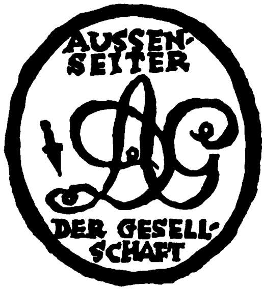
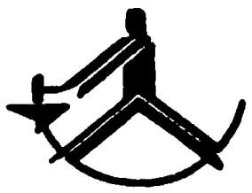

AUSSENSEITER DER GESELLSCHAFT
– DIE VERBRECHEN DER GEGENWART –

AUSSENSEITER
DER GESELLSCHAFT
– DIE VERBRECHEN DER GEGENWART –
HERAUSGEGEBEN VON
RUDOLF LEONHARD
BAND 10

VERLAG DIE SCHMIEDE
BERLIN
VON
FRANZ THEODOR CSOKOR
VERLAG DIE SCHMIEDE
BERLIN
EINBANDENTWURF
GEORG SALTER
BERLIN
Copyright 1924 by Verlag Die Schmiede Berlin
Das Wien der Nachkriegszeit ist verwandelt wie nie in seiner tausendjährigen Geschichte. Die Stadt, die neben der Welt gelebt hat, – selbst ihre Rothschilds waren noch Träumer, – die Stadt der Sonderlinge, Eigenbrödler, Sammler, die Stadt der verraunzten Genies, der unausgenutzten Talente, die Stadt der Kammermusik und der Barockpaläste, in der vor alldem wundervollen Toten kein Lebender atmen kann, die ewige „Kaiserstadt“, weil sie, eine Seltenheit unter den alten großen Städten Deutschlands, nie zur selbstherrlichen Verwaltung, nie zur freien Reichsstadt gelangt war, – sie wird nun jäh überschwemmt von Abenteurern, Glücksrittern, Condottieris des Geldes. Mühelose Schlachten, gefördert durch die österreichische Lässigkeit der Verwaltung, sichern Riesengewinnste, jähe Rückschläge zerstäuben sie wieder. Namen tauchen aus Dunkelheit in goldenes Licht, Namen stürzen aus Glanz in die Nacht. Es geht zu wie im Grunde überall nach dem Kriege; nur das Tempo wird viel phantastischer genommen, die Kämpfe sind erregender und wilder. Da ist einer, der kommt von einer Winkelbank, ein anderer rettet sich aus einem Schiffbruch, ein dritter ersteht bei der Demobilisierung Milliardenwerte mit Verträgen, die später vergeblich angefochten werden, ein vierter, einst ein kleiner Händler, ist im Kriege schon fett geworden an elendem Material, das er der Heeresverwaltung für ihr wehrloses Schlachtvieh aufzuschwatzen verstand, ein fünfter stellt ein Riesenwerk der Kriegszeit auf „Friedensbetrieb“ um; der Steckbrief kommt zu spät, – sie alle verschmähen dabei auch nicht das winzigste Geschäft: Dem Tüchtigsten im Raffen freie Bahn! Indessen rückt die Währung reißend zurück, geschwächt und verlassen von denen, die sie zu stützen berufen gewesen wären. Im gleichen Maße schwillt die Börse an, hetzen die Papiere zu Fieberkursen empor. Plünderungen durchklirren die Stadt; Pogromdrohungen gellen wider die von Bankinstituten überwucherten Nobelstraßen. Aber bei solchen Auswüchsen eifert jede Rasse, jede Konfession, jeder Stand, um den traurigen Vorrang; der Bauer noch tränkt seine Säue mit der Milch, die er dem Städter verweigert, so ihren Preis zu treiben. Dabei zerwühlen schwerste politische Krisen den Staat, an dessen Grenzen drei Mächte bereit zum Einmarsch lauern, wenn die Verzweiflung zu kommunistischen Evangelien greifen sollte. Die grüne und die rote Internationale, die vorwiegend agrarische christlich-soziale Volkspartei und die Sozialdemokraten verwalten in einer fort und fort mühsam gekleisterten Koalition die hungernde Republik, die im Westen und im Osten, in dem von Ungarn trotz Friedensvertrages bestrittenen Burgenland und in dem nach der Schweiz strebenden Vorarlberg verdächtige Abbröckelungstendenzen zeigt. Da geht – nach einer wütenden Philippika des sozialistischen Abgeordneten Karl Leuthner – das grünrote Bündnis in Fetzen, die Regierung Seipel’s beginnt, der den europäischen Mächten mit Auflösung Österreichs droht, – das bedeutet: Krieg zwischen Italien, Jugoslavien, Ungarn, Tschechoslovakei, um eine Beute, die schließlich doch bei Deutschland landen wird, wohin die Alpenbevölkerung in leidenschaftlichen Proklamationen drängt. Der kluge Prälat, mit Haltung und Diplomatie einer tausendjährigen kirchlichen Zucht gesegnet, verrechnet sich nicht. Die Angst aller leidend Beteiligten erhält den gefährdeten Donaustaat; Wilsons problematischer Völkerbund tritt hier zum erstenmal groß in Funktion. Unter Verzicht auf den deutschen Anschluß, nach Bestallung einer scharfen Kontrollkommission bezieht Österreich Unterstützung. Die Krone wird bei einem Vierzehntausendstel ihres Friedenswertes gebremst; dem Kapital des Inlandes wie des Auslandes ist ruhiges Betätigungsfeld durch den Genfer Vertrag gesichert. Es schwebt nicht mehr in Gefahr sozialistischer oder sowjetistischer Gegenmaßnahmen, es kann also das Tempo mäßigen und sich zugleich seiner unbequemsten Mitläufer entledigen. Wie der Ararat aus der Sintflut tauchen aus den verebbenden Wässern der Spekulation wieder die Häupter des alten Reichtumes, die Herren der Schlöte, Schächte und Forste, die noch nahe mit der Arbeit verknüpft waren, aus der sich ihre Macht erhoben hatte. Die neue Generation der Plutokratie tat sich nun ungleich schwerer: sie hatte ja nie aus den Dingen selbst geschöpft, sondern aus der Spannung zwischen ihnen, sozusagen aus geladener Luft, die sie gewitzt als Kraftfeld auszubeuten und in Bewegung umzusetzen verstand; sie gewann allein am Kabeln und am Stecken von Geschäftskontakten. Und aus solchem Unsicherheitsgefühl heraus suchte sie den alten Reichtum nun in ihre Geschäfte zu verstricken oder sich an den seinen zu beteiligen, kurz, was von dem österreichischen Raffke scheinbar sicher blieb, – der grobe Nackenhieb traf ihn ja erst mit der Frankkatastrophe, – mühte sich, aufgenommen zu werden in den Gotha des früheren Großkapitales.
Diese Vorkriegsreichen waren ja wahrhaftig die Aristokratie jener Zeit geworden. Hinter dem blendenden Goldschaum, den die nachgeborenen Geldhelden schlugen, blieben sie fast unsichtbar. Nun, da er auf sein wahres Maß zerrann und sie wenig versehrt und gelassen hervortraten, erkannte man ihre Kraft, die den Zusammenhang mit ihren Quellen nie verloren hatte, sondern weiter an den unermeßlichen Schätzen der ihr dienstbaren Erde zehrte. Die Tradition begann als Faktor wieder aufzuleben, der internationale Einfluß eines Namens von Kredit und Bedeutung aus dem Frieden her eroberte sich neuerlich den einstigen Geltungsbezirk. Im alten Glanze fanden sie sich, diese Familien, darin Fleiß von Väter auf Söhne ungeschwächt weiterging, diese Industriegewaltigen mit den Adelsbriefen jahrelanger Arbeit, diese Finanzdynastien, zu denen Könige gekommen waren, – – wo blieb vor ihnen das Nichts von gestern, das nun jäh „Generaldirektor“ hieß, um morgen vielleicht wieder Nichts zu sein? Man zog es heran, insofern man es brauchte, man erhörte seine Zudringlichkeit, – um von ihm zu lernen. Denn man konnte ja selbst nicht mehr arbeiten wie vor dem Kriege. Die Amerikanisierung des öffentlichen Lebens im üblen Sinne ging schon zu weit. Die Methoden der neuen Zeit mußte man bei den Neuen erfahren; die Metaphysik nebuloser Tochtergründungen, der Aktienvermehrungen, der Steuerverschleierungen, der Geldtransfusion in andere Unternehmungen, die so unmerklich in den Kreislauf der Geber gerieten, besaß dort ihre gediegensten Lehrkanzeln. Wohl war der Krieg verloren, von dem sie, die einstigen Mitberater und Mitgenießer an der nun zersplitterten Monarchie, sich manches erhofft hatten, – aber schließlich fühlten sie sich sogar stärker als ein verlorener Krieg. Elan und Unbedenklichkeit der Jungen mußte man sich zu eigen machen und die durch nichts einzuschüchternde Überzeugung von der letzten sakramentalen Unantastbarkeit des Geldes. Was immer von ihrem Eigentume in dem nun siegreichen Auslande lag, konnte, je umfangreicher es war, auf die Dauer um so weniger beschlagnahmt bleiben. Industrie und Großgrundbesitz sind die bevorrechtete Aristokratie aller konstitutionellen und demokratischen Systeme, wie es für die absoluten die Adelsstände waren, und so muß auch die internationale Solidarität einer kapitalistisch orientierten Weltordnung rein gesetzmäßig alle jene verletzenden Maßnahmen, wie etwa Enteignungen von kurzer Hand, möglichst vermeiden. So zwingt einer die Regierung eines siegreichen Erben des alten Kaiserreiches einen schon damals als höchst ungünstig befehdeten Vertrag zu übernehmen, indem er nach eingetretenen Schwierigkeiten seitens der neuen Herrscher in seinen dort liegenden Riesenbetrieben die Arbeit durch drei Jahre einfach einstellt. Tausende werden brotlos, Bahnen stocken, Not der Geschädigten pocht an das Parlament des Siegerstaates. Da schäumen sie, – aber zur Übernahme oder zur Ablösung fehlt das Geld und vor Expropriation scheut man zurück aus den genannten Gründen: Man vergleicht sich also, erkennt zähneknirschend das Bestandene an. Eine Gruppe Anderer verheert die Währung ihres Vaterlandes, um so in stündlich entwerteten Papieren ihre Goldschuld einzulösen. Ein dritter einigt sich mit seinem Konkurrenten im Feindesland, lange vor ihren beiderseitigen Regierungen, die dann den Konturen solcher Abkommen folgen müssen. Ein vierter lockt Strohmänner von drüben in die eigene Leitung, die unter ihren Ententeflaggen seinem Geschäfte den internationalen Freibrief sichern. Derlei Beispiele gibt es noch viele. Gegenstandslos bleibt der Ausgang von Kriegen für die Gewaltigen des Kapitales. Ihre Front lag ja nie an jenen in Blut und Dreck ersäuften Gräben. Und im Inlande hatten nur jene verloren, die ihr Vertrauen in die Habe des Staates oder der Einzelnen setzend es in irgendeiner Form belehnten, die Banknoten- und Bargeldsammler, die Kriegsanleiheinhaber, die Hypotheken- und Mündelgeldbezieher. Der in Liegenschaften jeglicher Art verankerte Besitz büßte dabei nichts ein, im Gegenteil: Die Verarmung der anderen schuf ihn oft schuldenfrei oder verringerte zumindest seine Belastung. Nach Revolution und Gegenrevolution ging die gelbe Flagge hoch. Der Aufruf „An Alle“, der 1917 vom Osten her Europa erschüttert hatte, wurde 1924 zur Devise einer Nacktrevue im Variété. Wie nach jeder Weltkatastrophe entwickelte sich auch nun ein Biedermeiertum, das jene wilden zehn Jahre einfach nicht wahr wissen wollte. Die Könige hatte es eingebüßt, nicht durch eigenen revolutionären Geist, sondern durch die Konsequenz der Ereignisse. So beugte es sich denn willig der neuen Diktatur, die über seinem Sichverschweigenwollen des Gewesenen hart und kalt emporstieg. Ein Typus Gewaltmenschen, von dem sachlichen Fanatismus Jener der Neuen Welt, eroberte sich die Vormacht in Europa. Nur wenige Unbekannte waren darunter, – sie hielten sich nicht lange, diese Reisläufer des neuen Kapitals, – der Kern bestand doch aus den früheren Magnaten der Industrie und des Bodens, aus Reedern, Kohlenfürsten, Hammerherren und den Holzriesen des Friedens. Sie waren es, die jetzt in den Kampf um den Cup des Lebens traten, der als Zeichen dieser vital-egoistischen Zeit vor allen ihren Äußerungen stand, vom Boxermatch bis zur Literatur.
Die Republik Österreich schien nach dem Kriege das ärmste Land der Alten Welt zu sein. Von Gebirgen verknöchert blieb es in dem wesentlichsten Existenzbedarf, in der Brotfrucht und in der Nahrung seiner Betriebe, in der Kohle, fast durchweg auf das Ausland angewiesen. Enorme Industrieanlagen, dem Maße des vormaligen Fünfzigmillionenstaates angepaßt, feierten nun aus Mangel an Rohstoffen. Der „Wasserkopf“ Wien, den die energische sozialdemokratische Gemeindeverwaltung mit allen Schrecken des Nachkriegszustandes übernehmen mußte, saß auf dem dünnen Leibchen eines Sechsmillionenvolkes des verstümmelten Bundeslandes. Die Nachfolgestaaten verschanzten sich hinter Zollwänden; das künstlich ausgetrennte Herz des alten Reiches drohte an der so gedrosselten Blutzufuhr völlig zu erlahmen. Und doch besaß es noch vier gewichtige Dinge, an deren Ausbeutung es nun mit brennender Energie gehen mußte, wollte es seine durch den Genfer Vertrag gestützte Daseinsberechtigung als autonomes Gemeinwesen erweisen. Das war das Salz, das es in Verwaltung nahm, das war die weiße Kohle seiner Wasserkräfte, die unter seiner Ägide oder Beteiligung private Gesellschaften in großen Überlandwerken konzentrierten, das war das Erz seiner Berge, wo reichsdeutsche und italienische Konzerne um das Schürfrecht warben, das war vor allem der begehrteste Ausfuhrposten, seine Wälder, die fast das ganze Reich überdeckten. Hier drängten sich die Abnehmer von Bedeutung; Italien, das forstarme, Frankreich mit Straßburg als Stapelplatz, Deutschland, das seine Reparationsleistungen zum Wiederaufbau teilweise von dem Brudervolke bezog; ja bis Holland und nach England hinüber wanderte das österreichische Edelholz. Aus zerkrachenden Forsten gediehen fürstliche Vermögen, zu denen der Grund noch im tiefsten Frieden gelegt worden war. Unermeßliche Gebiete standen damals zur Verfügung. In Bosnien, in der Herzegowina, in Kroatien, in Siebenbürgen, in Böhmen, in allen Alpenprovinzen. Höher als die Herren der Erze und der Wasser wuchsen so die Herren der Wälder, formten geradezu einen eigenen Menschenschlag. Denn wie das Individuum sich nach seiner Tätigkeit wandelt, so erhielten sie, deren Vorteil mit des Wortes wahrstem Sinne in der Erde wurzelte, etwas von gewaltigen Bauern, Bauern, die über tausende Knechte gebieten, Schnitter von Ackerprovinzen, auf denen die Ernte, die sie nicht gesät hatten, bereit stand, in keinen Halmen, sondern in den Stämmen starrer Bäume. In der ausgeplünderten hohlwangigen Nachkriegszeit fußen sie breit mit unentwertbaren Schätzen. Ihre Macht spottet aller Angriffe. Ja, sogar ihr Eigentum in den abgespaltenen Klötzen des alten Reiches ringen sie wieder ein; sie trotzen und listen es den neuen Herren dort ab in dieser oder jener verklausulierten Form. Der Steuerfiskus findet schwer zu ihnen. Die Erde hat sie ganz zu Bauern gemacht, zäh, schlau und karg wie Bauern sind. Und unbeugsam über das Ihre, unbeugsam, wenn es selbst der Blutnächste wäre, der seinen Teil zu fordern käme. Fast äußerlich verändern sie sich so; ob Christ, ob Jude, ob Landmann, ob Städter, gilt gleich; die Erde bleibt stärker in ihnen: Sie gehorchen der Erde.
Urwald in Bosnien. Schluchten klaffen, Berge bäumen sich, Gewässer zischen von eisenfarbenen Felsen nieder, und überall nistet, wuchert, drängt sich Gehölz. Heldenliedergegend, Wild-West des Balkan, kaum erforschtes Tibet Europas, das hier beginnt und am Griechenmeere in Saloniki endet. Land des großen Zaren Dušan, Land des südslavischen Siegfried, Marko Kraljevics, Land des serbischen Kaiserreiches und des türkischen Herrenvolkes nach dem Abendrot am Kossowo polje, am Amselfeld. Und Land zuletzt, aus dem der Anlaß des gräßlichsten Krieges mit zwei Schüssen an der Lateinerbrücke in Sarajevo aufblitzte. Stolzester Hengst in der Hürde der Alten Welt. Der Muselmann hat ihn nie ganz gebändigt, der Kroate nicht und nicht der serbische Bruder; der Venetianer langte wenig über seine dalmatinische Küste herein, und selbst der großmächtige Herr Ungar stieß hier auf Widerstand. Aber Geld und Gewinnsucht scheuen nichts, und wie die Republik von San Marco vor einem halben Jahrtausend Dalmatiens Waldgebirge in eine heute noch erschütternde Steinwüste wandelte, so rückt man auch hier seit Jahrzehnten den scheinbar unerschöpflichen Forsten an den grünen Leib. Um ihre Ränder beißen sich Häuflein Menschen fest; kleine saubere Häuschen quellen aus dem Boden, ein Klondyke des Holzes, blanke Maschinen funkeln. Das knirscht, kracht, splittert und sägt den ganzen Tag durch, nagt sich furchtlos ein in die verfitzte Wildnis, über der die Geier nun wie graue Zeichen des Waldsterbens kreisen, und zieht seinen vorgesehenen Borkengang. Hinter sich läßt es Scheiterhaufen von rauchenden Meilern und riesige Schichten von Baumleichen, die kleine Lokomotiven auf schmalspurigen Gleisen flink nach den Umschlagstellen befördern, wo die großen Eisenbahnen die Tore zur Welt aufreißen.
Es sind mächtige Herren, die hinter dieser namenlosen Arbeit sitzen, und auf den Börsen brausender Städte schreien Papiere, die den Fleiß tausend gering bedankter Hände anpreisen, und irgendwo, in Biarritz oder Ostende oder Capri erholt sich einer, von ihnen getragen, oder haust zeitentrückt als stiller Teilhaber und Villenfürst inmitten schöner alter Gemälde, auf denen Menschen friedlich in heiligen Hainen wandeln oder hängt kostbare Bernsteinketten, goldfarben wie die Harztränen der Tannen um einen kühlen nackten Frauenleib oder sitzt rastlos in einer Kontorhölle der Metropole, umknattert von Schreibmaschinen, umschrillt von Telephonen, umquirlt von Menschen, wie eine Spinne im Netz, die jeden Faden prüft. Er ist der Typus seiner Zeit, der Parforcemensch am Schreibtisch. Stärkster wird er von allen, weil er sich zum Regulator der Kraft macht, die ihn umströmt; er vertausendfacht sie durch die eherne Zwinge, in die er sie nimmt. Er hieße über dem großen Wasser Rockefeller, Morgan, Ford oder mit sonst einem Stahl-, Holz- oder Ölkönigsnamen. Er heißt in unserem Falle Robert Josef Eißler, thront als Chef einer hundertjährigen weltumspannenden Holzindustrie in Wien und arbeitet, arbeitet wie ein Besessener ohne sich je auch nur den kleinsten Genuß zu gönnen, arbeitet um der Arbeit willen, die ihn ganz verschlungen hat, arbeitet zu Hause, auf der Bahn, im Auto; nichts bleibt so abseitig, das er nicht wahrnimmt, nichts so vollendet, dem er nicht mißtraut, er ist nur mehr rechnendes Gehirn, schreibende Hand, Mund, der befiehlt. Unter der Peitsche seiner Augen leistet jeder das Äußerste; bis in die entferntesten Länder spüren sie diesen Blick, in Blockhäusern, auf Sägewerken, durch Urwaldgrün hindurch, wo immer sein Name zu Werk wird. Und das wird er in mächtigstem Ausmaß. Da ist allein die bosnische Satrapie, die er mit dem Münchner Ortlieb führt, von Vorkriegsjahren her, und unversehrt sich im verlornen Land erhalten hat. Von den mehreren hunderttausend Hektaren werden jährlich an die tausend geschlagen und einhundertfünfzig Kilometer Schienennetz seiner Privatbahn, auf der zwanzig Lokomotiven unter Dampf stehen, vermitteln den Verkehr der Menschen und Waren in seinem Reich. Über dreitausend Arbeiter roden, fällen, schlichten dort die Wirrnis des Krywayatales, des Zepugebietes, Namen wie aus dem afrikanischen Dschungel. Und das alles bedeutet erst eine Provinz seines Königreiches, die ihn auf Jahrzehnte mit unversieglichen Rohstoffen versorgt; in Kroatien besitzt seine Dynastie ein Gut, in Österreich hat seine Gründung, die Holzbank, in dem durch Minister Dr. Schürff zur Parlamentsdebatte gemachten Reichraminger Holzabstockungsvertrag der jungen Republik ihren Einfluß spüren lassen, in Ungarn herrscht die Firma als „Eissler es testvere“, dort wie in Bosnien seit Friedenszeit, wo einst der Finanzminister Kallay seiner Abmachungen mit dem geschäftstüchtigen Hause wegen im magyarischen Abgeordnetenhaus manche Unannehmlichkeiten erfuhr. „Eissler i fratti“ nennt sich die rumänische Kolonie, „J. Eissler bratri“ heißt sie in der Tschechoslovakei. Und das lediglich als zentraler Kommandoraum des ganzen Kraftwerkes tätige Wiener Stammgeschäft führt den Titel „J. Eißler und Brüder“. Aber von den mitgenannten Brüdern ist in der zweiten von Robert Eißler geleiteten Generation nichts zu verspüren; was immer da beteiligt war, verschwand allmählich vor dem despotischen Chef, der das Geschäft trotz Krieg und Niederlage wieder zu der europäischen Geltung gebracht hatte, die es vorher besaß. In viele Friedensmillionen steigerte er das Vermögen, sicherte seine Betriebe durch geschickte Staatsverträge wie ein Monarch, wußte sich siegreich gegen gewaltige Konkurrenten auf dem Weltmarkt zu behaupten, indem er sie verdrängte oder durch Bündnisse entwaffnete. Seiner robusten Energie war es nicht gegeben, sich an gefälligen Dingen zu freuen, an Büchern, an Bildern, an Schauspielen; aller Trieb seiner Rasse nach äußerer Tätigkeit nach dem, was Peter Altenberg „die hundertperzentige Verzinsung des Lebens“ nannte, blieb in ihm am stärksten gehäuft und angespannt. Um sich fand er selten Widerstand; ruhige Menschen, durchtränkt von der etwas müden Kultur jüdischen Patriziates bis zur Schrullenhaftigkeit, bildeten seine Verwandtschaft. Doktor Hermann Eißler, einer von ihnen, schuf sich eine Gemäldegalerie von internationalem Ansehen, darin besonders die Franzosen des neunzehnten Jahrhunderts von Delacroix und Gericault an glänzend vertreten sind; Gottfried, ein anderer – kürzlich verstorben – nannte eine der schönsten Erstdruckbibliotheken und eine der besten Wiener Miniaturensammlungen sein eigen. Gewiß, auch sie hatten sich alle wahrhaft gerackert, nur waren sie nie so sehr der Despotie ihrer Arbeit verfallen, daß sie in ihrem Tagwerk ausschließlich Zweck und Ziel ihres Daseins sahen. Doch Robert Eißler kannte nur dieses. Er war rauh wie Esau, aber ein Esau, der auf seiner Erstgeburt bei Acker und Herden bestand und hinweggestampft wäre über Jakob und Abraham. Dem Märchenhelden Wilhelm Hauffs glich er, dem Kohlenbrenner Peter Munk mit dem kalten Herzen. Der barsche, finstere Mann, der mit seinen Untergebenen im Feldwebelton verkehrte, sie vor sich stramm stehen ließ und ähnliche militärische Bräuche trieb, hatte dem Moloch des Geschäftes sein Leben hingeopfert in des Wortes blutigster Wahrheit. Ihm schien es dabei vielleicht nicht so sehr um Gewinn zu tun, wie um das Würfelspiel der Macht, darin erhöhter Glanz der Dynastie zum Preise stand. Dazu wäre ihm nichts zu groß oder zu gering gewesen, dazu gewann er sich – der Hergang ist noch später zu erörtern – sechshunderttausend Goldkronen Mitgift, die ihm als Geschäftseinlage binnen Jahresfrist von seiner Bewerbung an zur Bedingung gestellt worden waren, um als öffentlicher Gesellschafter sich einzukaufen, und wie er sich der Protokollierung seines Namens wegen verehelichte, so geschah auch nachträglich kein Schritt, den nicht das Kontor gebot. In die Kasteiung mit Arbeit flüchtete er gewissermaßen vor sich selbst, wohl aus dem Gefühle, bei einem einzigen Augenblick Ruhe müßte ihn die Rasanz des eigenen Motors in Stücke reißen. „Der Staat bin ich!“ konnte er auch schließlich von seinem Reiche behaupten, denn alles um sich hatte er schachmatt gesetzt, zur Ohnmacht verurteilt. Seine Vettern ließen sich von ihm abholzen wie die Bäume des Krywayatales; sie, die in einem Winkel ihrer Seelen doch noch zu dem alten besinnlichen Wien zählten, wichen auch widerspruchslos seiner Keilerwut nach Arbeit, begnügten sich als Firmenvorstände ohne größeren Einfluß, erfrischten sich im übrigen bei ihren Bildern, Statuen und anderen Liebhabereien in einer sanfteren Welt, in die das Ächzen der sterbenden Wälder nicht mehr herüberdrang.
Nur bei Zweien von ihnen galt es Kampf bis aufs Messer: Es waren Onkel und Vetter des allmächtigen Seniorchefs, Vater und Sohn, beide Phantasten in ihrer Art, die hier an einen Tatsachenmenschen gerieten, – sie hießen Heinrich und Otto Eißler.
Wie Fremde vor einem gewaltigen Aufbruch lebt das Judentum in seinem innersten Wesen, tausendfach verkleidetes Heimweh nach einem verlorenen Reich. Immer sind die Sandalen geschnürt, die Lenden sind immer umgürtet. Und ob es noch so heftig in das Diesseits drängen mag, – an ihnen allen, bald brennender, bald linder zehrt die gleiche Wunde, vom polnischen Dorf bis in den Stadtpalast. Das braucht darum noch kein reales Zion zu bedeuten, – es ist mehr der Tempel Salomonis, der nie zu Ende kommt, weil seine Kuppel, der Messias, fehlt. Heilig gilt hier deshalb, wie bei keinem Volke sonst, die Familie. Aus Zeltesenge von der Wüste her, durch Ghettozwang ihrer christlichen Herren, erlernten sie die Notwendigkeit der auch religiös gebotenen starren Geschlossenheit der Sippe. Noch ehelicht bei ihren Strenggläubigen der Bruder des Bruders Witwe, noch herrschen alte Menschen bis über das Grab hinaus, aus dem die Toten dann als Beispiel und Vorbild aller Tugenden den Jungen immerfort gepriesen werden. In solchem Patriarchate, das einst, vor der Diaspora, bis zur Blutgerichtsbarkeit des Familienhauptes über die Seinen reichte, steckt, was vom Vieh- und Ackerbauerwesen des alten Israel seinen zerschmetterten Stämmen verblieb. Und wie in den Bauern bohrt auch in ihnen die nagende Angst vor den Erben. „Der Mensch hat zwei Feinde, die er liebt,“ warnt ein talmudisches Sprichwort: „seine Leidenschaften und seine Kinder.“ Und diese Kinder versuchen auch fast alle einmal den großen Aufstand, der aber in den meisten Fällen mißlingt; dann strecken sie die Waffen, im Büro des Vaters, wo sie sich einordnen oder in einer unerwünschten anbefohlenen Ehe, die sie auf sich nehmen. Und zeugen und gebären Kinder, die ebenso liebeshungrig und rebellisch aufwachsen und ebenso der Familie als abstraktem Begriff geopfert werden. Die Härte des Sohnes der Hagar haben sie verloren; die Sehnsucht nach der Erde, von der man sie forttrieb, mußten sie verwandeln in den Hang nach ihrem Erträgnis, dem Geld; die Macht der Mauer, in die man sie durch ein Jahrtausend Verachtung und Verfolgung gesperrt hat, schuf ihnen alles jenseits davon fremd bis zur Lächerlichkeit, nur Furcht und Ehrfurcht vor dem Götzen des Alters erfüllt sie wie den jungen Bauern, an den der Vater einen Knecht ersparen will. Seine Kraft freilich finden sie nicht mehr, wenn er im Kampfe um den Hof den in den Sielen erlahmten Erzeuger ins „Ausgeding“ versperrt, in die Versorgung von der Jungen Gnaden, mildere Form vorzeitlicher Bräuche, da neben der Schwelle ein Steinbeil lag, mit dem man die unnützen Fresser erschlug. Angeprangert für alle Ewigkeit hat dagegen in der Schrift der Chronist des trunkenen Noah Verspottung durch seine Söhne, und in den Häusern seines Blutes verdämmern Greise und Greisinnen im Glorienschein der Familie und Schritt und Stimme dämpfen sich, geht man vorüber an ihren Gemächern. Das ist der Orient im Judentum, der mit dem Alter das klare Reich der Weisheit anbrechen sieht, heiteren Herbst, darin die Früchte des Lebens reifen und Trost und Süßigkeit den Nachgeborenen spenden. Und aus der gleichen Erwägung, die das weiße Haar zu Häupten der Tafel setzt, schont man ebenso die Schwachen, die für die scharfäugige Hast des Tagwerkes nicht taugen, denn auch sie reden mit ungewohnten Stimmen. Dekadenzprodukte sind sie, gefördert durch die Inzucht der Verwandtenehen, durch die übersättigte Kultur ihrer stadtverhafteten Eltern. Im hitzigen Ressentiment gegen ihre Herkunft entwickeln sie sich, doch anders als die ehemaligen Rebellen, die „Söhne“, die ausgekühlt später die tüchtigsten Kompagnons und Erben abgeben. Sie hassen die Betriebsamkeit ihrer Nächsten, sie flüchten in die Kunst, besonders in die Musik, in politische Ideologien, in philosophische Spekulationen, – sie werden aber trotzdem von den anderen nicht fallen gelassen, nein, eher blickt man dort voll gerührten Stolzes nach ihnen, wenn man sich einmal mit ihrer verminderten Verwertungsfähigkeit abgefunden hat, wie nach einer geheimen Rechtfertigung der eigenen fanatischen Diesseitigkeit, wie nach Sündenböcken, die manche fremde Dunkelheit auf sich nehmen. Denn aus der ungeheueren Reichweite jenes Volkes von äußerster Selbstbehauptung bis zur äußersten Entselbstung, Slaventum des Hirnes (wie dieses im Gefühle maßlos, so hier im Geiste und seinen Kräften) erstehen immer wieder Propheten und Richter und gerade von seinen scheinbar Schwachen her, von den Lebensfremden, wie unter seinen Alten Geschöpfe von zeitloser Güte und Weisheit sich baumkronenhaft über ihren Generationen wölben. Den tätig Robusten verkörpern diese Zarten, Empfindlichen stets eine Art unerfüllter eigener Sehnsucht, und gerne gewährt man ihnen Mittel und Unterhalt für ihr Dasein, das mehr ein Danebensein bedeutet. Eine Ausnahmestellung genießen sie, an die man fast nie zu tasten wagt.
In dem Falle, der hier ausgesponnen wird, ereignete sich beides, Angriff gegen die Heiligkeit des Alters in der Familie und gegen einen Schutzbefohlenen der eigenen Schwäche. Eine Bauerntragödie brach aus im jüdischen Patriziat. Allerdings in einem, das sein Beruf wieder der Erde und ihren unbarmherzigen Gesetzen genähert hatte; sie verband sich hier mit dem bäuerischen Urgrund der ganzen Rasse. Zwei darin sonst unerhörte Taten geschahen: Der Leiter eines Riesenbetriebes wird nach einem halben Jahrhundert führender Arbeit durch eine Palastrevolution der eigenen Sippe gestürzt, und sein Sohn, mehr Eigenbrötler, als untüchtig, bloß von verminderter Lebensintensität, rücksichtslos um seine Ansprüche gebracht und ausgeschaltet. Der aber, Kohlhaas des Geldes, sucht das Haupt der Verschwörung auf, einer „Verschwörung der Reichen gegen die Armen“, wie er seinen persönlichen Fall als symptomatisch in kollektivistischer Erweiterung nannte, stellt mit sechs Schüssen gegen seinen Blutsvetter Robert Eißler die ihm falsch geratene Rechnung wieder her.
Heinrich Eißler, durch vierzig Jahre Chef der Firma, zu ihren frühesten Häuptern gehörig, Kaufmann alten Schlages, voll Rechtlichkeit, Strenge und Staatsgesinnung, – er weigerte sich unter anderm Steuerbekenntnisse zu unterschreiben, die ihm zweifelhaft erschienen, – war durch unglückliche Privaterlebnisse innerlich nachhaltig in Anspruch genommen worden. Seiner Ehe mit einer kühlen egozentrischen Frau gesellte sich noch eine ihm unleidliche Einstellung seiner Blutsverwandten. „Ein Blutsverwandter heißt, der dir am letzten hilft und dich am ersten beißt,“ dieses im Judentum sonst wenig gültige Sprichwort fand in seinem Fall reichlich Bestätigung. Die häuslichen Sorgen, die an seiner Energie sogen, die ihm eigene weiche, gutherzige Art ließ seine Umgebung leichte Bestimmbarkeit durch fremde Einflüsse befürchten und ihn darum für die Dauer auf der Kommandobrücke des großen Werkes nicht genügend verwendbar erscheinen. Den ersten Ansturm versuchte der leibliche Bruder; er mißlang. Der Alte fußte ja mit sieben und ein viertel Millionen Schweizer Franken, das war ein Viertel des gesamten Firmenvermögens, im Geschäft und mit der Nachfolgeschaft seines Sohnes Otto darin, der sich bei Abschluß der schwierigen bosnischen Verträge schon eingearbeitet hatte. Ein erfolgverheißender Schachzug gegen Heinrich Eißler mußte ihn darum in seinen Stützen treffen: in seinem an der Firma tätigen Geld und in dem Sohn, den man erst von ihm trennte und dann gesondert abfertigte, wenn das erste gelang. Vor allem hieß es, die vom Handelsgesetze festgelegten Bestimmungen nach dem Tode eines öffentlichen Gesellschafters, die nebst der „pragmatischen Sanktion“ der Firma, den Sohn und Erben schützten, durch persönliche Abmachungen zu entkräften. Statt der darin vorgesehenen Liquidation ordnete ein 1897 abgeschlossener Gesellschaftsvertrag, dem Vater und Sohn ahnungslos beigepflichtet hatten, in einer solchen Lage lediglich Auszahlung des Kapitalskontos an, also auch ohne eventuelle stille Reserven, die hier bestanden. Damit war der erste Schritt einer gesetzlich unantastbaren Enteignung getan. Die Einheitsfront gegen die beiden unbeliebten Familienmitglieder sollte jedoch erst später zustandekommen: Unter der Regentschaft des zu einer solchen Aktion unbedenklich fähigen Robert Eißler, dem Neffen und Vetter der Bedrohten. Inzwischen wird fort und fort geplänkelt; 1910 bereits möchte der des Haders müde und durch ein körperliches Leiden verstörte Otto Eißler gegen angemessene Entschädigung gänzlich aus dem Geschäft scheiden, aber eben um diese ging es ja. So stellt er nun seine Tätigkeit dort ein, die fünfzehn Jahre gewährt hatte, zieht sich nach Baden zurück, wo er der Sorge um seine Gesundheit wegen lebt und mit den Vettern dauernd hadert. Diese Gefechte ziehen sich über den ganzen Weltkrieg hin, der weder in seinem Verlauf noch in seinem Ergebnis und dessen Folgen die Holzmagnaten ernstlich schädigt. Ohne wesentliche Einbuße erhalten sie sich ihre wertvollste Kolonie in Bosnien und die herandämmernde Inflationskatastrophe versehrt sie nicht in ihrem Marke, dem Bodenwert. Ihre geschäftlichen Feldzüge sind also jedenfalls besser ausgefallen als die militärischen ihres Vaterlandes, dessen Staatsbürgerschaft man übrigens sofort gegen jene des tschechoslovakischen Siegerstaates eintauscht. In solcher frisch gefestigten Position geht man nun daran, im Inneren des eigenen Betriebes „tabula rasa“ zu machen mit allen Elementen, die für den reißenden Machtkampf der neuen Zeit ungeeignet erscheinen. Ballast über Bord! Der achtundsiebenzigjährige Firmenchef Heinrich Eißler soll nun endgültig abgesägt werden! Sein Vetter Robert treibt dazu; nur ungerne halten die beiden anderen Firmenherrscher Alfred und Hermann sowie Roberts Schwager, der Anwalt Dr. Fürst, da mit. Heinrich macht allerdings, wie sich der Letztgenannte später im Prozesse ausdrückte, „unmögliche Sachen“, nämlich er lehnte es ab, seinen Namen unter ihm nicht einwandfrei erscheinende Steuerbekenntnisse des Geschäftes zu setzen, er erklärt ferner, wie Dr. Fürst zur Begründung des obengenannten Vorwurfes erzählte, bei einer Bücherrevision der bosnischen Filiale, dem Sachverständigen, die Bilanzen seien falsch, denn die Firma verdiene viel mehr. Äußerungen ähnlicher Art, die keineswegs unbedingt einen Schwachsinnigen verraten müssen, vielleicht ebensogut einen redlichen Kaufmann, der sich der Pflichten des Besitzes der Allgemeinheit gegenüber bewußt bleibt, verübelte man ihm ungemein. Gewiß bot auch sein hohes Alter einen triftigen Grund, ihn verantwortlichen Unternehmungen zu entziehen. Aber es ist der Ton, der die Musik macht, und eben dieser Ton, angeschlagen von Robert Eißler, war unter den vorliegenden Umständen nichts weniger als edel und achtungsvoll gegenüber einem Manne, der durch ein halbes Jahrhundert sein Leben dem Geschäfte geopfert hatte und dem eben jener Robert Eißler, wie später noch auszuführen, seine despotische Stellung verdankte. Nach wiederholten schriftlichen und mündlichen Aufforderungen an Heinrich Eißler, freiwillig zurückzutreten, klagt ihn schließlich 1919 das von Robert beratene Cheftriumvirat beim Handelsgericht auf Ausschluß aus der Firma mit Hinweis auf sein Alter, eine den Greis tief kränkende Maßnahme. Das anständige Schiedsgericht trachtete auch diesen von allen übrigen beteiligten Faktoren einschließlich des beauftragten Klägers Dr. Fürst als peinlich und unnötig empfundenen Handel in Güte beizulegen. Es kam später zu einer Art Ausgleich, der freilich die tieferen Wunden nicht mehr schließen konnte, die in Heinrich Eißler bis zu seinem Ende brannten. Aber die Attacke auf den Onkel genügte dem strammen Firmenchef noch nicht; sein Sohn, der Vetter, sollte ebenso erledigt werden. Ihn als öffentlichen Gesellschafter an Stelle seines Vaters zu übernehmen, wie es bisher für die übrigen Söhne der ehemaligen Firmenchefs nach Hinscheiden oder Austritt ihrer Vorgänger gegolten hatte, weigert sich Robert in beiden Fällen, sucht ihn mit Angebot anderer Kompensationen mattzusetzen. Doch Otto widersteht; er wittert die Gefahr und schlägt dem Dr. Benedikt, dem Rechtsfreund seines Vaters, ein Bündnis vor, wonach sie beide, Vater und Sohn, in dem laufenden Zivilprozeß ihre gemeinsamen Interessen ungeteilt und untrennbar bis zu Ende verfechten würden. Dieser Pakt kommt nicht zustande; hingegen ein anderer, der zu ihrem Verderben führt. Der auch dem Vater gegenüber ewig mißtrauische Otto ließ sich dazu verleiten, mürbe gemacht durch halbjährige geschickt dirigierte Verhandlungen, auf seine Rechtsnachfolge in der Stellung seines Vaters bei der Firma zu verzichten. Er gibt ihn damit preis und noch mehr: Nun legt er als stiller Gesellschafter neuerlich 750000 Franken in das Geschäft ein und resigniert auf die Einkünfte aus der bosnischen Zweigstelle, wenn dort im Ausgange des Steuerkrieges gegen den Nachfolgestaat die Firma Eißler & Ortlieb aus taktischen Motiven eine Umwandlung in eine Aktiengesellschaft vollziehen sollte. Was diese Klausel bedeutete, sei daraus ermessen, daß von dem Anteil, der dem alten Heinrich Eißler zustand, zwei Drittel, viereinhalb Millionen Schweizer Franken, allein auf das bosnische Unternehmen zu buchen waren. Mit diesem Vertrag unterfertigt demnach Otto Eißler sein und seines Vaters Todesurteil im übertragenen Sinne; aber noch ein drittes, ein wirkliches, das er selbst an dem feindlichen Generalstabschef in jenem Kampfe vollstrecken sollte, an Robert Eißler.
1920, ein Jahr nach diesem privaten Versailles, stirbt Heinrich Eißler als Vorletzter des alten Firmenstabes, der sich noch um den Großvater, Gründer und Ahnherrn Bernhard Eißler geschart hatte. Er stirbt und schließt mit seinem Hingang, den Gram und Erregung über das ihm angetane Leid beschleunigt haben, den ersten Teil der Eißlerischen Familientragödie: „Nein, der Robert, wenn der nicht wäre, könnte ich um zwanzig Jahre länger leben!“ hat er vor seinem Ende der Schaffnerin seines Hauses geklagt. Ein kurzes Satyrspiel hebt an vor der Tragödie zweiten Teil. Ein Zauberkunststück gelingt, das unerklärlich scheint und in seinem Resultate dennoch unantastbar blieb. Der Hexenreigen des Geldverfalles verhüllt den Hergang, gegen den juridisch nichts eingewendet werden kann, obgleich ein Unrecht fast zu greifen nahe scheint. Angst und Ungeschick des Opfers tuen das ihre dazu. Aus der mit über sieben Millionen Schweizer Franken bewerteten Todesbilanz des Verblichenen sind binnen Jahresfrist durch Gottes Segen ihrer fünfzehntausend geworden, die dem Erben aufgewertet zu Buche stehen.
Der Erbe hieß Otto Eißler.
Dramatische Kontrapunktik, die fast schon ans Kolportagehafte streift, fügte es, daß Robert Eißler dem durch ihn zur Strecke gebrachten Heinrich die Stellung zu verdanken hatte, kraft derer er auf dem Hauptmaste der Firma saß. Des alten Bernhard Kinder Heinrich, Johann, Jakob und Moritz verwalteten gemeinsam das Geschäft unter einer Art Rückversicherung vor der Nachkommenschaft, wonach nämlich ihre Söhne erst nach freiwilliger Abdankung oder Tod der Väter die Stellungen jener einzunehmen vermöchten, also im Sinne des zitierten talmudischen Sprichwortes über den geliebten Feind. Otto, Alfred, Hermann und Robert hießen sie, von denen zwei bald durch Hinscheiden der elterlichen Vordermänner die Führersitze erobern sollten. Just der Ehrgeizigste, Robert, war nicht dabei; ihm brannte das längst unter den Nägeln, doch sein Erzeuger, der vermutlich Ähnliches verspürte, saß unerbittlich fest mit begründeter Aussicht auf hohes Alter und ungeschwächte Tätigkeit. In seiner Not kam Robert zu dem gutmütigen Onkel Heinrich, er möge bei dem Bruder, Roberts Vater, erreichen, daß Robert noch zu Lebzeiten des unverwüstlichen Urhebers seines Daseins Aufnahme in die Leitung der Firma gewährt würde. Heinrich, ahnungslos, wie sehr er sich und seinen Sohn damit gefährdete, bedrängte unablässig den Bruder, Roberts Ansinnen zu willfahren und setzte endlich nicht ohne Schwierigkeiten jenem durch, was ihm für sein eigenes Fleisch und Blut versagt werden sollte. Freilich mit drückenden Vorbehalten. Roberts Vater, aus gleichem Hartholz wie sein Sprößling, heischte als Preis für seine Erlaubnis von dem Sohn im Laufe eines Jahres sechshunderttausend Goldkronen Einlage in das Geschäft, die er in dem zeitgemäßen Wege einer Ehe binnen der genannten Frist zu beschaffen habe. Und wieder hilft die Familie Heinrichs; diesmal ist es die Gattin, Ottos Mutter, die ihm die Frau mit den sechshunderttausend Goldkronen besorgt, und Robert Eißler heiratet und er besteigt den Firmenthron. Und sein erstes war, den zu stürzen, der ihn hinaufgeleitet hatte, vielleicht gerade weil er vor ihm einst schwach gewesen war.
Sonderbar und bedrückend mag derlei trotz tausend alltäglicher Beispiele einem schlichten Hirne erscheinen, das noch an Worte von Liebe und tieferer Gemeinschaft zwischen Menschen glaubt. In einer auf den Besitz eingeschworenen Ordnung zählt es jedoch zu den einfachsten und ersten Forderungen, seine Persönlichkeit dem Zwecke zu unterstellen, und „Einheirat“, meist in verkleideterer Form als dieser, die noch den Vorzug der Offenheit aufweist, ist überall gewünscht und befohlen, wo Geld zu Geld will, Einfluß zu Einfluß, Ware zu Ware. Und gewiß erachtete der alte Heinrich des Neffen Robert Handlungsweise in dieser Sache weit klüger, als etwa die seines leiblichen Sohnes Otto, der an einer Ehe als Einlagekapital wenig Gefallen fand, die in seiner Gesellschaftsschichte gebräuchliche Synthese zwischen Merkur und Hymen verwarf und schon Jahre mit einer braven vermögenslosen Frau lebte, von der er die schönste Mitgift in drei zärtlichst geliebten Kindern sein Eigen nennen durfte. Jedenfalls wußte des Vaters leidenschaftlicher Einspruch es zu verhüten, daß dieser Neigungsbund je zur Heirat sich emporwage; Ottos Beziehung galt ihm „nicht als standesgemäß“, – was andererseits jegliche Geldallianz mit wem immer gewesen wäre, – und selbst auf den Sohn färbte noch sein Wille ab. Auch nach des Vaters Tod respektierte er dieses aus dem dynastischen Hochmut des Welthauses entsprungene Verbot; Anna Heimerle – so hieß seine Freundin – blieb ihm „Lebensgefährtin“ im Sinne des Gesetzes bis vor die Schranken des Gerichtes, an denen sie unter Tränen die Wärme, Güte und Sorgfalt, mit denen der Beschuldigte sie und die ihren stets umgeben hätte, nicht genug zu rühmen wußte. Die Frage, ob Otto eine geschäftlich angetraute Gattin ebenso zur Seite gestanden wäre und umgekehrt, stellt sich unwillkürlich ein; hier muß jedoch der Wahrheit zu Ehren bekannt werden, daß die Ehe seines späteren Opfers sich gleichfalls ungemein glücklich gestaltete und daß die letzte Klage des sterbenden Robert Weib und Kindern galt. Im übrigen mochten die Verwandten Recht behalten, wenn sie aus solchen Symptomen schlossen, daß Otto nichts weniger sei als eine Führernatur in ihrem Sinne. Auf dem Wege dahin war er eben im Menschlichen stecken geblieben und dieses Menschliche besaß er, weil er gelitten hatte, trotz alles Geldes, von Jugend auf. Und dieses Leid, – früh widerfahrenes Unrecht, – wurde auch zur Wurzel der Verstrickung, aus der seine Tat gedieh. Das schuldlos Erduldete schuf den drosselnden Knoten in dem armen Herzen, das zu seinem Unheil für mehr als nur für das Hauptbuch schlug und alle nachträglich ihm widerfahrene Unbill schnürte ihn nur fester und verfitzte ihn, – bis aus dem Gewürge bloß eine einzige Lösung blieb: Gewalt!
Sproß eines müden, vom Geschäft verzehrten Mannes und einer kühlen liebeleeren Frau, war der kleine Otto, der einzige männliche Sproß, der „Kronprinz“, denn nur zwei Mädchen folgten ihm, Ida und Melanie. Nicht sehr kronprinzenhaft wuchs er auf. Das verschüchterte Kind erfährt häufige und unbarmherzige Züchtigungen von seiten der Mutter, für die es sich keinen Grund weiß; dem Vater kann es sich nicht anvertrauen; ihn sieht es kaum, denn den hat das Kontor zwischen den Zähnen; schließlich wird es bezahlten Kräften überantwortet, Hofmeistern, Gouvernanten, Dienstboten. So wächst der Erbe des Reichen auf, welt- und gottverlassen, um den einzigen und köstlichsten Schatz menschlichen Werdens vom Anbeginne bestohlen: Um ungetrübte Jugend. Sein Schulkamerad Doktor Stefan Schmied erzählt vor Gericht, der Knabe wäre der Klasse durch drei für sein Alter recht ungewöhnliche Eigenschaften aufgefallen: Ernst, Verschlossenheit und Mißtrauen. Und diese dunkle Dreieinigkeit, die über jedem der „Erniedrigten und Beleidigten“ des Lebens wacht, hielt ihm auch weiterhin treueste Gefolgschaft. Aus seinem schon im Keime verletzten Rechtsgefühl gewinnt er zwar ergriffenes Verstehen für den leidenden Nächsten über die Horizonte seiner Herkunft und seiner Kaste weit hinaus, zugleich aber erfüllt ihn rechthaberische Reizbarkeit, die aus derselben Leiderfahrung stammt. Hypochondrie und Menschenscheu bemächtigen sich des Beklagenswerten, dem man den Genuß seiner Kindheit unterschlagen hatte; mit der tagenden Erkenntnis des Jünglings schaut er den Himmel über seiner Welt sich stets gefährlicher verfinstern. Die harte Mutter, der er übrigens durch Güte vergalt, was sie an ihm gefehlt hatte, der schwache Vater, müde, unterlegen im Ehekampf, aus dem er in das Geschäft floh, wo ihn wieder die Verwandtschaft geduckt umlauerte, – von nirgendwo kam dem Heranwachsenden warm die Stimme eines Menschen entgegen. Verbittert wirft auch er sich in Arbeit, durch fünfzehn Jahre steckt er im Betrieb, bereist die Niederlagen, wirkt an heiklen Operationen mit, so 1905 an dem berühmten bosnisch-herzegowinischen Vertrag, – aber er merkt dabei, daß er sich trotz allem zwischen den klugen kühlen Rechnern seiner Vetterschaft nicht gut ausnimmt, ein letzter Eifer mangelt ihm, eine äußerste Sachlichkeit, die den Posten Mensch aus ihren Kalkülen streicht. Als untüchtig sieht er sich zur Seite geschoben; Minderkeitskomplexe und Überkompensationen wechseln in seinem Seelenleben ab. In dem Pessimismus, der ihn befällt, wird ihm ein einziges spätes Glück zuteil. Im besten Mannesalter lernt er Anna Heimerle kennen, die nun seinen Weg teilt, und an den Kindern, die sie ihm schenkt, sieht er sein Dasein doch nicht völlig nutzlos vertan. Es aber ganz mit frischem Licht zu füllen und ihm so Vergessenheit des Gewesenen zu erringen, das vermochte selbst die so uneigennützige Liebe dieser Frau nicht. Zu tief hatten sich Schrullenhaftigkeiten verschiedenster Art schon in ihm eingefressen, und nun richtete sich überdies die Front der Familienhierarchie gegen ihn und gegen seinen Vater und verstärkt so seine Absonderlichkeiten zum Wahne, dauernd verfolgt und bedroht zu sein. Ein körperliches Gebrest behindert zudem seine Bewegungsfreiheit. Er lebt und handelt unter einem Schleier von ständiger Angst. Paranoide Gesichte bemächtigen sich seiner; immer geht er bewaffnet. Auf einem Sägewerk, das er inspiziert, trifft ihn ein Bekannter, bekundet als Zeuge: Otto Eißler wandelt dort in Schwimmhose, links einen Sonnenschirm, rechts einen Revolver in der Hand. Nachts ruft einen Anderen Gepolter in den Schlafraum des Chefs; kaum kann er durch die Barrikaden von Möbeln eindringen: er sieht Stühle im gleichen Abstande aufgestellt und über sie nackt hinspringend – Otto Eißler, gleich einer phantastischen E. T. A. Hoffmann-Figur. Gift wolle man ihm in die Speisen mischen, argwöhnt er. Oder: Man plane, ihm die Luft des Zimmers durch böse Dünste zu verderben, und er zerstäubt dort die erdenklichsten Desinfektionsmittel, daß einmal sein Cousin Ernst Lanner, der ihn besucht, schleunigst das Fenster aufreißt, um nicht in Ohnmacht zu sinken. Zu solchen Zwangsvorstellungen gesellt sich ausgesprochene Bakterienfurcht. Darum mißt er den Luftraum jedes Gemaches ab, darin er schlafen soll, ob er nicht etwa einen besonderen Brutherd verheerender Mikroben böte, darum trägt er lächerlich weite Kleider und läuft im Hause nur adamitisch umher, die Haut so stets möglichst frei zu halten, darum ist er auch Fanatiker des keimvernichtenden Sonnenbades, das er, unbekümmert um seine Umgebung, bei jeder möglichen Gelegenheit genießt; darum läßt er sich sogar die Zeitung vorwärmen, ehe er sie liest. Solche Maßnahmen sucht er denen, die sie bestaunen, mit harmlosen Vorwänden anderer Art zu erklären, aber gerade sein Eifer, der jedwede pathologische Deutung heftigst ablehnt, kennzeichnet das dissimulierende Krankheitsbild des Mannes, der von Kind auf unter dem Druck vermeintlicher und wirklicher Verfolgungen endlich in jene Tat ausbrach, der Resultante all der geschilderten Komponenten, die ihn, den Fanatiker seines Rechtes, vor das Gericht bringen sollte. Wer vermöchte zu beschwören, wo hier Verantwortlichkeit endet und das zwangsläufige Manische anhebt, die fixe Idee, die persekutiven Charakter annimmt? Wer, – außer den Psychiatern, von denen hier noch zu reden ist? Alles trieb hier zu einer dissozialen Aktion, doch weil der vom Schicksal vorgezeichnete Täter in hohem Maße das war, was man „moralische Natur“ benennt, trachtete er sich unbewußt einen Unterbau plausibler Beweggründe zu schaffen und den Verfolger festzustellen, von dem alles Widrige seines zermarterten Lebens seinen sinnfälligen Ausgang nahm. Und da hier beides zutraf, der Versuch einer geschäftlichen Entmündigung sowie sein deutlicher Urheber, ein unsentimentaler strategischer Gegner, der es sich zum Ziel gesetzt hatte, ihn ohne wesentliche eigene Opfer aus dem Sattel zu werfen, – so wälzt der gehetzte geängstete Mann alle seine Qual gegen jenen als ihren Begründer, findet in Robert Eißler die Quelle des Bösen, das nach seiner und der Seinen Existenz trachtet. Trotzdem – oder eben darum – bleibt er in einer Art Haßliebe an den weitdisponierenden Chef gekettet, dessen traumlose straffe Kraft der Sachlichkeit ihm widerwillig Bewunderung abnötigt, strebt dauernd zu Vergleichen zu gelangen, die an Roberts strikter Haltung und zuwartender Ruhe immer wieder scheitern. Der ist schon einmal unbeugsam darauf aus, Heinrich und Otto, den ihm verderblich dünkenden Anwärter auf die Firmenführung, auf diesem Boden gründlichst auszujäten. Und Otto dachte auch schon einmal, 1910, ernstlich daran, dem Hause seiner Väter endgültig „Valet“ zu sagen, unterließ es später, weil er dabei seiner Meinung nach von den Verwandten schwer übervorteilt worden wäre; er schied damals nur von dem Büro, zum Teile aus Hypochondrie. Mittlerweilen hatten die Verhältnisse noch mehr zu seinen Ungunsten ausgeschlagen, nicht der durch Ehen bereits zum Teil versorgten Schwestern wegen; aber die Lebensgefährtin ist hinzugekommen und seine drei Kinder. Und so streitet und queruliert er herum, stets gefaßt auf einen Satansstreich des Anderen, der in unheimlicher Stille verharrend, sich durch nichts aus seiner wachsamen Stellung locken läßt. Bis Otto in seiner Übervorsicht die gröbsten Fehler begeht, in die Robert gnadenlos einhakt. Der Alte ist ja inzwischen schon verdrängt und war überdies so höflich, durch seinen Tod alle weiteren Schwierigkeiten zu quittieren, nun mag der Sohn ihm folgen samt seinen Forderungen, denen die ins Rutschen geratene Valutenlawine das Rückgrat brechen soll. Und wirklich hastet er, betäubt von den Schrecken der niederprasselnden Kroneninflation, rasch, unüberlegt, das Seine zu retten, um jeden Preis. Den aber – bestimmt ihm: Vetter Robert! Mit Papier und anderen labilen Werten wird die Goldforderung des lästigen Verwandten abgespeist. Zu spät tobt der über seine Blindheit, fleht um Zurücknahme seiner in seelischer Panik gemachten Konzessionen. Umsonst! Kein Jota seines verbrieften Rechtes, kein Gramm seines Pfundes läßt Vetter Shylock ab. Dem Besiegten schwillt er zum Oger an, der ihn frißt, seine Geschwister, seine Gefährtin, seine Kinder, diese abgöttisch angebeteten Kinder! Immer mächtiger wächst er sich aus, eherne Stirne, steinernes Herz, – sonst alles Geld! 1920 und 1921 wird der Vertrag mit Otto in letzte vernichtende Form gegossen. Endergebnis ist das bereits bekannte, das unerschütterlich bleibt: Fünfzehntausend Schweizer Franken sind für den armen Vetter da, der ihrer siebenundeinhalb Millionen als sein Teil beansprucht hat, und der Enteignete sieht sich zugleich entwaffnet; übereilig hat er gutgeheißen, was ihn nun verstrickt, und wo er sich stützen will, hascht er nur Luft statt einer rettenden Hand. Die finanzielle Transfusion, die dabei stattfand, schilderte er später in seiner auch schriftlich abgefaßten „Information“ haarscharf vor Gericht; sie würde in ihren Zifferndetails hier ermüden. Genug, daß sogar der Staatsanwalt daraus anerkannte, an dem Beklagten sei übel gehandelt worden. Otto versucht durch seinen Rechtsfreund Dr. Kantor im Wege des Zivilprozesses gegen die Firma Remedur. Der Advokat durchschaut, wie er, die Schärfe jener Abmachungen, die seinem Klienten die Sehnen zerschneiden, doch auch er gewahrt recht spärliche Möglichkeiten für einen erfolgverheißenden Gegenzug. Das moralische Gesetz mochte Robert tausendmal schuldig sprechen, – vor dem bürgerlichen bleibt er unantastbar. Da wirft sich der gehetzte empörte Otto selbst zum Richter auf in seiner Sache. Der Vetter ist ihm schon mehr als sein privater Feind, er ist Feind geworden schlechthin alles Lebenden, das unter diesen aus den Fugen gegangenen Zeit hungert, klagt, stirbt. Seinesgleichen war schuld an dem Kriege, wie es nun schuld an solchem Frieden ist! Mit überpersönlichem Legat fühlt Otto Eißler sich ausgestattet, als er zur Abrechnung schreitet gegen seinen Feind. Er sieht vor sich nicht den Blutsverwandten mehr und nicht mehr das leidende Antlitz des Menschen hinter Trieb und Gier, die ihn zwangen, so zu werden, wie er ist, er sieht nur die eiserne Maske der Macht! Ein Feind der Menschheit steht vor ihm. Ähnlich dem Roßtäuscher Kohlhaas erweitert auch er seinen Fall ins Allgemeine und ahnt nicht, daß die Wurzel des Unrechtes tief lag wie die der geschlachteten Bäume, in den Orgien des über verwüsteten Wäldern und wohlfeilen Lohnheloten errichteten Besitzes.
Im „Herzoghof“ des seit Römertagen gesuchten Kurortes Baden bei Wien, – „Aquae thermae“ nannten es die Pensionisten der pannonischen Legionen, die in seinen Schwefelquellen Heilung erhofften, – haust Otto Eißler. Das Gebäude, so benannt nach den fröhlichen Babenberger Herzögen, den vorhabsburgischen Herrschern von Österreich, die gerne hier verweilten, stellt eine passende Unterkunft für Leute dar, die in der sommerüber von Fremden wimmelnden Stadt keinen überflüssigen Kontakt wünschen und dabei eine gewisse vornehme Behaglichkeit nicht entbehren wollen. Der Misanthrop aus der Holzdynastie verlegte darum frühzeitig sein Hauptquartier an dieses stille Refugium, von dem aus er den Krieg gegen seinen Vetter führt, zuletzt 1923 in einer bereits an Irrsinn grenzenden Erregung, je sicherer die Erfolglosigkeit seiner Bemühungen zu erwarten schien. Freundin und Kinder umgeben ihn mit liebereichster Pflege; dennoch muß der Arzt zu dem von schwersten Nervenkrisen Erschütterten gerufen werden, stellt seelische Störungen fest, deren Behandlung strengste Ruhe und Abgeschlossenheit von der Außenwelt als erstes Gebot erforderte. Davon will der Unglückliche nichts wissen, streitet mit punischer Tapferkeit für seine steigend getrübteren Aussichten, klingelt nachts Anwälte und Notare aus dem Schlaf, um dauernd das Gleiche zu erfahren: Daß er für sich nahezu nichts zu hoffen habe. Allenfalls den mitgeschädigten Schwestern würde man im Wiener Erzhause Kompensationen zubilligen, – ihm: Nicht die winzigste!
Es ist August, der Monat der Verbrechen aus Leidenschaft. Seine weiße Glut vergiftet die Hirne, heizt die Herzen bis zur Explosion. Achtete eindringlicheres Verfahren, als das der gegenwärtigen Themis auf die Verknüpfung von Gewalttat und Gezeiten, es gelangte zu verblüffenden Erkenntnissen: Winter, Intellektualverbrechen; Affekthandlungen im Sommer; Selbstmorde und Revolutionen in den Brunftzeiten Frühling und Herbst. Durch die verschlafene Empirestadt, über der es von Hitze brütet, jagt ein rasendes Menschentier: Otto Eißler, trächtig von seinem Schicksal. Klarheit hat er jetzt durch den Rechtsfreund. Eine Tagsatzung soll in seiner Sache noch stattfinden, nutzlos wird sie vergehen. Nichts mehr nützt! So wird er berufen; immer wieder berufen. Hartnäckig wie ein Bauer, der um einen Grenzstein streitet. Wohin führt das am Ende? Und er, Otto Eißler, hat selber beigetragen, daß es so weit gekommen ist! „Dummer Kerl!“ hört er zischeln um sich; nein, niemand ist da, nur die leeren flimmernden Straßen, – aber der Vetter soll das ja gesagt haben von ihm, der Vetter Robert, der in Wien hockt, breit, gewaltig, unangreifbar. Er, der Reiche, kann ja warten, bis der andere sich zugrunde prozessiert hat; fünfzehntausend Schweizer Franken tauchen bald in Expensen auf; dann fällt die Angelegenheit in nichts zusammen, weil Otto ein Bettler geworden ist. Was aber nachher? Die Frau! Die Kinder! Unmöglich ist es, unmöglich! Im kühlen Waffenladen kommt der Heißgelaufene zu sich. Ein Entschluß beginnt. Alle Gerichte bleiben wehrlos in Sache des Rechtes. Und auch Gott schweigt; er ist ihm nicht wohlgefällig, – niemandem ist er wohlgefällig, er, der Häßliche, von Kind auf Gestoßene. „Gewiß Herr Müller! Mauserpistole samt Patronen. Ja ...“ Ob er mit dem Browning vom Februar zufrieden gewesen sei? – „O, freilich!“ Den Browning trägt er doch stets im Sacke, entsichert und wohlgeladen, – umlagert von Feinden, wie er ist. Aber davon erzählt er nichts. Etwas glättet sich in ihm, wie er die kalte Waffe am Schafte hält und mit dem Abzug spielt. Und nun läßt er sich Munition geben, als gälte es, ein neues Fort Chabrol zu armieren. Es ist der dreiundzwanzigste August.
Zu Hause macht er Bilanz über sich und das Seine. Man hat sich vorzusehen für alle Fälle. Wogegen? Ach, das wird sich schon weisen. Das geschieht doch nicht so einfach aus einem selbst, das packt einem von draußen und findet statt. So heißt es auch immer „fand statt“. Also darum jede Schuld berichtigt, selbst die kleinste! In einer Woche ist er in Ordnung damit. Keine Rückstände! Alles soll sauber liegen hinter ihm. Ja, da ist noch seine Schwester Ida, Witwe nach Exzellenz von Molnar, ungarischen Staatssekretär. Immer war die gut zu ihm; sie sollte man unbedingt aufsuchen, – der armen Frau daheim, den Kindern, kann man nichts zumuten, – die Schwester ist ein kluger starker Mensch, und so einer muß zur Stelle sein für die Seinen, wenn – ja, irgend etwas geschieht, – und wäre es das eigene Leben, das man wegwirft – um den Frieden, – um den endlichen Frieden, nach dreißig Jahren Unrast, Verfolgung, Bitterkeit. Und vorher zwanzig Jahre einsamer Jugend, lichtloser Kindheit ... „Sorge Dich um die Meinen,“ bittet er die Schwester und noch allerlei Verworrenes, das der tödlich Erschrockenen kaum zum Bewußtsein kommt; da ist er auch schon fort.
Er fahrt nach Wien. Früher Morgen. Der letzte Augusttag brennt ab. Die elektrische Kleinbahn surrt grau durch das sommerträge Land. Ringsum Ebene, schattenlos. Erst westwärts in den schwarzblauen Bergen am Rande des Flachlandes strotzen wieder stämmige Waldbäume. Sie mögen sich hüten, daß nicht auch sie bald dem großen Vetter verfallen. Wie es ihm ergeht samt seinem Anspruch und allem, was daran hängt: Die Schwestern, die Gefährtin, die drei Kinder. Das Blut siedet ihm dick in die Schläfen, wenn er versucht, das zu Ende zu denken. Ihnen insgesamt wird noch das Mark ausgesogen durch den höchst unbrüderlichen Bruderssohn, der früher nicht rastet. Man will ihn aber jetzt stellen; von Angesicht zu Angesicht befragen will man ihn, zu letzten Male, ob er sich nicht doch vergleichen mag in zwölfter Stunde? Das muß man, ehe man jede Vernunft fahren läßt, die sich nur mühsam noch, von Wut umschäumt, hinter der glühenden Stirne aufrecht hält. Vielleicht sind die beiden Mitchefs zugegen; die könnten eingreifen, mildern; die haben sich ja nicht so verbissen in diese Menschenjagd. Da ist der Luegerplatz mit der Burg des Feindes, die er nun betritt. Wieder einmal. Denn erst vor wenigen Wochen war er hier, nachdem er zuvor lange heraufgestiert hat vom Rathausparke aus. „Wie eine Wachspuppe“ –, so berichtet einer, der ihn dabei ertappt. Und der Herr Robert würdigte ihn damals kaum einer Antwort und die Bucheinsicht wird ihm auch verweigert; gerade, daß sie ihm nicht schon die Türe weisen. Nein, – das tuen sie doch nicht; von den Angestellten keiner; die verstehen sich mit ihm, weil er freundlich zu ihnen ist, nicht so – wie der! Der Robert! Kommt er heute etwa nicht ins Kontor? Da erteilt der Kassierer Köhler Bescheid: Robert allein sei hier, – und geht eilig weg. Robert – allein –? Stille stemmt einem den Atem zurück, entsetzliche Stille. Gleicht das Chefzimmer nicht plötzlich einem gedämpften Raum, darin eine Leiche liegt? – Der Besuch lehnt sich an den Schreibtisch; den kennt er: Vierzig Jahre war sein Vater Heinrich daran verkettet gewesen, vierzig in Arbeit geknechtete Jahre, – mit einem Fußtritt als Dank zum Abschluß! Das verantwortet – Robert! Immer bleibt er so letzte Ursache jedwedes Unheiles, das ihn und die Seinen martert, er – in seiner unbeugsamen Härte! Auch im Hause hier mögen sie ihn sicherlich alle nicht. Man tuschelt mancherlei. Da ist der Jakob Singer, – den hat er einmal mit zerrissenen Schuhen stundenlang im Schnee warten lassen, und wie der vor ihm frostzitternd von einem Fuß auf den anderen tritt, schreit er ihn an: „Hund, kannst du nicht habt acht stehen?“ Und der Ernst, sein Cousin, der weiß, wie der Robert beim Militär die armen Soldaten angeblasen hat wegen dem Grüßen. Und solche Geschichten gibt’s genug von dem Robert, zum Beispiel die mit dem Vetter Otto, he? Mit ihm selbst? – Die Hände würgen in den Säcken des schlotternden Anzuges; sie spüren Kühle, Metall: Die Pistolen! Und da tritt auch der Vetter ein, scheinbar nicht eben erfreut über den Gast, den er vorfindet. Freilich, gerade heute, wo ihn der Kopf wohl von Wichtigerem summt, wo unter anderem die deutsche Mark von den rheinischen Kollegen abgefeilt endgültig ins Bodenlose saust, – da sind andere Sorgen am Ruder und andere Pläne. Und schon hält er auch das Telephon in der Hand und rasch zuvorkommend in des Wortes engster Bedeutung wirft er es hin zwischen zwei Geschäftsgesprächen: „Ich werde lieber sieben Jahre prozessieren, als dir die Rente bezahlen.“ Da wird alles rot, roter wogender Nebel, drinnen schwankt der Schreibtisch des alten Heinrich wie ein Schiff im Untergang. Wo klammert man sich fest, daß es einen nicht niederreißt, hinab zu den goldlüsternen Haifischen, die nun wieder Beute wittern, zahllose Beute? Die Kolben in den Taschen bäumen sich; man möchte sie zurückzwingen, aber nun halten sie einen fest, wachsen einem in die Fäuste, wühlen sich aufwärts, drängen ans Licht. Was sagt der drüben? – „Du kannst noch sieben Jahre Prozeß führen.“ Bis dahin hat man doch keine Faser am Leibe mehr, die einem gehört! Und jetzt weiter: „Von mir aus könnt ihr alle krepieren!“ Nein! Das nicht! Das muß Täuschung sein, sausen in den Ohren! Die Kolben rücken über den Rand der Säcke, – verlängerte Hände sind sie und ihre Läufe steile Finger, die auf den Menschen weisen, der dort ruhig sitzt und telephoniert. Ja hübsch ruhig, während ihm gegenüber sein Blutsverwandter an der gleichen Stelle zugrunde geht, wo man schon seinem Vater die Knochen gebrochen hat. Trotz des Rechtes, das hinter beiden stand, sie hatten recht, – bloß der andere war schlauer! – „Dummer Kerl!“ – Wer ruft so? – Der drüben? Der – am Telephon? Und hätte er es auch nicht ausgesprochen, – jede seiner Gesten, die ihn abstreifen, schreit es ihm zu, jeder seiner Blicke, der ihn anspuckt. Wahrhaftig, das ist kein Mensch mehr! Das ist das Geld selbst, das da vor einem thront, ungeheuer, unbarmherzig, angemästet mit allem Elend der Erde, vollgesoffen aus den Wunden ihrer Schlachten und dennoch unersättlich gierig nach Blut und Blut und Blut! Alles Bauch, wälderzermalmender, menschenkauender Bauch! Die Welt muß man erlösen von ihm – man muß – und los! – oh jauchzende Himmelfahrt der feuerblitzenden Hände – weiter – oh unfaßbare Befreiung im Donner der ersten krachenden Schüsse – weiter – oh überirdischer Rausch, der den Krampf eines Lebens entbindet, – weiter – da drüben taumelt einer, ächzt, speit rot – weiter – als Barrikade den Schreibtisch des Vaters, Opferblock, wo nun wieder geschlachtet wird, – weiter – Blut wäscht ihn rein, Blut sühnt – weiter – das krümmt sich dort auf, röchelt, sinkt ein, wie eine Marionette, der man die Drähte gekappt hat – weiter – Türen klaffen, Gesichter schreien und flattern durch Rauch, – man hört nichts mehr davon – man sieht nichts mehr, – man weiß nur eines: Man hat es dem Golde gegeben, man hat dem Golde in den Bauch geschossen, sechsmal –
Und nun rasch die letzte Kugel durch den eigenen Schädel! Abschied im Zenith der Tat! Ihn soll keiner noch je angrinsen, keiner ihn verhöhnen, eine Millionenstadt hebt nun seinen Namen über alle Gischt ihrer täglichen Helden hinaus, – – aber schon dringen aus dem blassen Haupte drüben, um das sich Entsetzen und Grauen schart, ein paar furchtbar klarer Worte:
„Wie oft hat dieser dumme Kerl geschossen?“
„Dieser dumme Kerl –“ Das war es wieder und unleugbar laut! Also auch jetzt ist er für den dort noch nichts anderes, auch daß er ihm den Tod sechsfach ins Fleisch geimpft hat, zählt nicht. Der stirbt, ohne Kenntnis zu nehmen von seinem Mörder, stirbt voll verzweifelter Wut über einen blöden unsinnigen Zufall, der ihn mitten aus seinen Plänen und Werken reißt, – denn das ist ihm der Vetter samt seiner Tat: Ein Ziegelstein vom Dache! Ein Auto, das sich mit ihm überschlug! Stupide Tücke eines Dinges! Mehr nicht!
Der Mörder läßt die Arme baumeln wie schlaffe Peitschenschnüre. Mühelos entwindet man ihm die Waffen; ingrimmig stößt er etwas hervor, – „es ist nicht schade um den“ will ein Zeuge gehört haben, – und dann sagt eine Uniform:
„Im Namen des Gesetzes –“
Und neuerlich kommt drüben die Stimme des anderen. Aber dieses Mal ist sie leise und von einem fremden Klang. „Bauchschuß – ich sterbe, – Herr Doktor, – wie lange habe ich noch zu leben?“ und „– meine arme Frau, – meine Kinder –“ Die Maske der Macht gleitet nieder von dem Antlitz eines Menschen, der sich sterben weiß. Und dieses Antlitz ist ganz bleich, ganz rein, – wie das eines Genesenden von einem schweren qualvollen Leid.
Der Täter gewahrt das nicht mehr. Eine Entspannung lockert ihn. Ruhig läßt er sich abführen.
Er gewahrt auch das Größere nicht. Daß man im Leben stets nur einen Feind hat. Den man vergeblich vernichten würde, und wäre es durch tausend Leiber. Weil er sich im Nebenmenschen am Widerspruche zu dem Nachbarwesen immer neuerlich entzündet. Weil das Ich schuld trägt daran und seine schicksalshafte Gegensätzlichkeit zu einem ebenso bestimmt gearteten anderen Ich. Darum begegnet man ihm immer wieder. Erledigt ihn mit keiner Gewalt. Vielleicht nur durch klare wehrlose Güte, wenn sie ihn überzeugt: Mit Selbstaufopferung.
Robert Eißler wurde so sein Feind. Als Urgegner des Undeutbaren, des Unentschlossenen, des Wegelosen, des vom Gefühle Überschwemmten. Ein Ekstatiker seines Lebensbekenntnisses, das hier „Gold“ hieß. Aber auch andere Namen hätte führen können: Kampf, Herrschaft, Gott, Gesetz!
Wenige Stunden nach jenem Überfalle stirbt Robert Eißler. Die Kugeln haben sein Inneres fast zerfleischt: Zu sechzehn Wunden.
Und acht Monate später steht Otto Eißler in Wien vor der Apostelzahl der zwölf Geschworenen und ihrem Vorsitzenden, dem Gesetze in Menschengestalt.
Der Vorsitzende nennt sich: Hofrat Doktor Ramsauer.
In den Tragödien der großen Prozesse aller Rechtsstaaten bilden die Psychiater bei jedem Strafverfahren, darin sie forensisch zur Kenntnis genommen werden, zumeist eine Art tragikomischer Nebenaktion, Satyrspiel als Intermezzo. Fälle ergeben sich allerdings bei politischen oder anderen aus Staatsraison kitzlicheren Vergehen, darin ihre Meinung als willkommenes Rettungssteuer dient, den ganzen Handel aus dem Orkane des Meinungsstreites in den sicheren Hafen eines Irrenhauses zu lootsen. Womit die Gewissenhaftigkeit ihrer Personen und ihres Votums keineswegs angezweifelt sei. Sonst obläge ihnen nach dem Erachten ihrer Auftraggeber mehr die Rolle der Regimentsärzte im Kriege, nämlich festzustellen, ob der ihnen zugewiesene Klient „tauglich ohne Gebrechen“ für den Spruch der blinden Themis wäre. Behindernd wirkt dabei der knappe Platz, den ihnen die Prozeßordnung und das geltende Strafgesetz für die Grenzen der Begriffe von unverantwortlicher Zwangslage und eingeschränkter, jedoch noch als verantwortlich klassifizierter Willensfähigkeit einräumt.
In der Sache Otto Eißler erschwerte ihnen der Beschuldigte selbst ungemein ihre Stellungnahme, gerade indem er sie ihnen scheinbar erleichterte. Er war es, der um keinen Preis als geisteskrank betrachtet werden wollte, der lediglich zugestand, im Augenblicke der Tat den Kopf verloren zu haben, und der eben darum, wie durch die ausgesprochene „Süchtigkeit“ jede seiner abnorm scheinenden Gewohnheiten rationalistisch zu fundieren, den Verdacht der „Dissimulation“, Benehmen eines Kranken, der sich gewaltsam gesund stellt, erweckte.
Den Psychiatern lagen drei Möglichkeiten vor: Es konnte sich hier um einen wirklich Irren, in erster Linie um einen Paranoiker drehen oder um einen schweren Psychopathen paranoiden oder schizophrenen Charakters, der unter den genannten Umständen im auflodernden Momente der Tat keine Verantwortung mehr trug für sein Verbrechen oder lediglich um einen Sonderling von psychopathischer Minderwertigkeit, der heftigen Gemütsbewegungen nur sehr geringen Widerstand zu bieten vermochte, aber doch nach § 46 des Öst. Strafgesetzbuches als haftbar anzusehen war. Nach Eißlers eigenem Geständnis, nach den durch Zeugen belegten Indizien über sein seelisches Verhalten vor, während des Ereignisses und darüber hinaus, ja, nach einem Teil des später noch präziser zu erörternden Gutachtens selbst lag die Annahme eines paranoiden Typus nahe.
Populär erläutert stellt der Paranoide die Form einer geistigen Krise vor, die sich zur wirklichen Paranoia etwa so verhält wie eine Herzneurose zu einem organischen Herzleiden. Wie diese kann sie bei geeigneter Behandlung völlig abklingen, wie diese in ihr schweres verhängnisvolles Nachbarstadium übergehen. Die Ähnlichkeit ist oft frappant, die zwischen dem klinischen Bilde einer Paranoia und dem eines paranoiden Zustandes besteht. Auch bei dem Paranoiden, besonders bei jenem, der zu Verfolgungs- oder Beziehungswahnvorstellungen neigt, steigern sich die Anfälle in sogenannten „Schüben“, wie der terminus technicus lautet, auch er glaubt sich umlagert und bespäht, fühlt sich als passives Zentrum sämtlicher ihm widrigen Ereignisse, meint elektrische Ströme nach sich entsendet, hört Stimmen, wittert an Kleidern und Möbeln Menschenkot, trachtet andauernd einen Urheber seines Übels zu konstatieren, – und kann naturgemäß aus solchem Zustand latenter Überreizungen, die bis zur totalen Sinnestäuschung reichen, verantwortungslose Affekthandlungen verüben. Dabei gilt er in des Wortes Sinn nicht für „geisteskrank,“ vermag neben seinen gefährlichen Momenten, in denen er einer Rechenschaft nicht fähig erklärt werden muß, ein produktives Genie ersten Ranges zu bleiben, wie etwa August Strindberg in seiner schlimmsten Pariser Zeit, als „Einsam“ und „Inferno“ entstanden, diese erschütterndsten und zugleich trostreichsten Dokumente eines schaffenden Geistes, weil sie deutlich beweisen, wie die Schöpferkraft des Individuums es über die furchtbarsten Nachtklüfte des „Ich“ hinwegzuheben imstande ist. Führt aber eine solche paranoide Bedrängnis in einem Menschen, dem nicht die Flucht in irgendeine Produktivität oder Hingabe daran (Kunst, Religion) gegönnt war, zur antisozialen Tat, wie – bei Otto Eißler, woferne man ihn paranoid erachtet, – so mußte diese lediglich als schicksalshaftes Elementarereignis im Organismus gewertet werden, für das der Täter keine judizielle Haftung übernehmen konnte.
Die Psychiater verneinten das. Mit einer Begründung, die am besten im Wortlaute wiedergegeben sei:
„... Aus dem betreffenden Akte und der Aussage Dr. Edmund Benedikts“ (des Anwaltes des alten Heinrich Eißler) „ist zu ersehen, daß Beklagter“ (Otto Eißler) „von seiten seiner drei Vettern arg benachteiligt worden ist, und daß er nach dem rücksichtslosen Vorgehen derselben gegen seinen hochbetagten Vater begründete Ursache hatte, ihnen zu mißtrauen, was bei seiner Gemütsart nur auf allzu vorbereiteten Boden fiel. Wenn er im Verlaufe der vorgekommenen Differenzen immer verbitterter wurde, den Vettern alles Erdenkliche zutraute, vom ‚Gurgelabschneiden‘, ja geradezu vom ‚wirtschaftlichen Morde‘ sprach, so sind das wohl überschwängliche derbe Ausdrücke, die aber von den Tatsachen nicht allzuviel abwichen und somit keineswegs wahnhaft begründet sind. Wenn er ferners vermutet, daß man von seinem Militärdienst schädigende Wirkungen auf seine Gesundheit erhoffte, um dadurch einen gefährlichen Gegner loszuwerden, so beruft er sich hierbei darauf, daß man nicht nur ihn selbst verhinderte, ein Enthebungsgesuch abzusenden, sondern auch seinen Vater mit Anzeige bedrohte, als er ein solches einbringen wollte.“
Scheint der letzterwähnte Vorwurf schon unwahrscheinlich, weil er, wäre er richtig, ein völlig unvorstellbares Maß von Haß und Unmenschlichkeit involvieren würde, sollte er nicht vielmehr als typisches Symptom einer fixen Idee, verfolgt zu sein, bezeichnet werden müssen, so gewinnt diese Annahme bei den folgenden Details des Gutachtens noch mehr Raum:
„... Schon seit Jahren am liebsten bewaffnet, weil er bei seinen ländlichen Ausflügen schon frühe in den Karpathen und auch hier infolge seines sonderbaren Wesens Attacken fürchtete und solche auch tatsächlich bei Preßburg erlebte, hielt er seit seinen Differenzen mit den Vettern auch daran fest, weil er sich nach den gemachten Erfahrungen vor diesen nicht sicher fühlte. Er beschränkt sich diesbezüglich aber auf bloße Vermutungen, wobei er sich auf Vergleiche mit dem Schicksal verschwundener Millionäre (!) und darauf beruft, daß Reiche alles vermögen, ohne aber Symptome von krankhaften Beachtungs- oder Verfolgungswahn, der immer weitere Kreise zieht, darzubieten. Alle diesbezüglichen Äußerungen verlassen nie den Boden der Möglichkeit und Wahrscheinlichkeit, wie er durch die vorliegenden Tatsachen rücksichtsloser Behandlung und vermögensrechtlicher Übervorteilung von seiten seiner Vettern geschaffen wurde. Beide waren wohl imstande, einen solchen psychopathisch veranlagten Sonderling wie Beklagter einer ist, nicht nur auf das Tiefste zu verwunden und zu verbittern, sondern ihn auch in einen Zustand begreiflicher innerer Erregung zu versetzen, so daß er schließlich zur Waffe griff und seinen Hauptgegner niederschoß.“
Hätte demnach Otto Eißler seinen Vetter grundlos hingestreckt, so wäre seine Unzurechnungsfähigkeit damit schlagend erwiesen worden. Daß aber allein gekränktes Rechtsgefühl mit oder ohne zureichenden Anlaß, schon weil es sich ununterbrochen verfolgt und gegen seine Verfolger wehrlos sieht, in die ungeheuersten Exzesse ausarten kann, die seine Verantwortlichkeit aufheben, daß ein Mensch, der sich schwer benachteiligt meint, dabei belastet von Geburt her ist, auch durch wirkliche Tatsachen, die seinen Wahn begründen, immer tiefer in die Schlingen paranoider Zwangsvorstellungen gerät, aus denen er sich nunmehr mit Gewalt reißen kann, – sollte das wahrhaft ein Novum in der Geschichte psychopathologischer Erscheinungen sein? Muß denn ein Paranoiker oder ein Paranoider durchaus äußerlich unmotiviert handeln. Wäre hier nicht oft genug eine übersehene kausale Verbindung denkbar von einem tatsächlichen ätzenden Erlebnis her, das er sich als Brücke für die eigene Rechtfertigung seiner wachsenden Manien errichtet, solange ihn die große Dämmerung noch nicht völlig überwuchert hat? Nein; dieses Gutachten dünkt mich das Schulbeispiel eines „hysteron proteron“ zu sein, einer geradezu typischen Verwirrung von Voraussetzung und Ergebnis und als solches reif für die Lehrbücher der Logik. Auch in dem Überschreiten seiner Befugnis, das aus der gleichen Quelle stammt, in dem Judizieren der Tat selbst, das einzig der Prozeßführung vorbehalten zu bleiben hat. So, wenn es schreibt:
„Er (Otto Eißler) bestreitet aber in solcher Absicht(‚vorsätzlicher Mord‘) hingegangen zu sein und will nur in einer momentanen zornigen Erregung über die höhnische Ablehnung seines nochmals versuchten Ausgleichsantrages durch Robert gehandelt haben. Das klingt im Hinblick auf seine dem Niedergeschossenen zugerufene Äußerung: ‚Das hast du für die sieben Millionen, um die du mich gebracht hast!‘, die sein klares Tatbewußtsein bekundet“ (besagte Äußerung steht nebenbei so gar nicht fest), „im Hinblick auf sein Ablauern der günstigen Gelegenheit eines Telephongespräches Roberts und seine offenbar vorbereitete schwere Bewaffnung,“ (schon ‚seit Jahren am liebsten bewaffnet‘ erzählt das gleiche Gutachten einige Seiten vorher), „ganz unglaubwürdig. Letztere diente offenbar dazu, ganz sicher zu gehen.“ Und nun kommt das Beste! „Wenn Beklagter behauptet, gar nicht gezielt zu haben, so widerspricht dem die Tatsache, daß er nur zu gut getroffen hat.“ Was sonst? Auf die wenigen Schritte Entfernung beim Feuern aus zwei Pistolen zugleich, wo ein Kind nicht gefehlt hätte, geschweige denn ein alter Jäger wie Otto Eißler, dem die Handhabung der Waffe schon im Blute lag?
Alle diese Dinge wirken um so verwunderlicher, als das Gutachten sonst Otto Eißlers Werdegang und die Entwicklung seiner psychopathologischen Eigenheiten genetisch getreu schildert, nur ohne daraus die zu erwartenden Folgerungen zu ziehen. Der Angeklagte leidet darnach an hereditären seelischen und körperlichen Belastungen. Aus einer traurigen Ehe über eine lichtlose Kindheit liebeleer gelassen, schleppt er das bittere Erbteil seiner Eltern mit, des Vaters gutmütige aufrichtige, jedoch von jeder Erregung unberechenbar aufgepeitschte Art, die nicht minder reizbare, dem Spielteufel verfallene Mutter: Sie beide kämpfen fort in der Seele des Sohnes bis zu seinem Untergang. Ihn drosselt Ohnmacht gegenüber dem Dasein, einem Dasein, das die Anverwandten mühelos meistern, die Kaufleute mit dem Feldherrnblick, die Wager und Gewinner an der Bank des äußeren Lebens, deren abenteuerlichste Schachzüge schließlich immer Gold entschuldigt, lohnt und verklärt. Und er, Otto, ein von der Wurzel her Versehrter, nicht geschaffen in dem groben Machtspiele mitzukommen, dabei doch begabt mit einem fast künstlerischen Wissen darum, dem es nur an dem letzten nötigen Schuß Brutalität mangelt, es zur Tat zu wandeln, ein Abseitiger, in dem solche ihm schicksalshaft aufgedrungene Haltung alle dunklen Gewalten der Einsamkeit erwachen ließ: Furcht, Argwohn und vergrübelte Sehnsucht. Und nun gesellt sich noch Krankheit dazu, keine ausgesprochene, mehr ihre drohenden Zeichen, die ihn an Körper und Seele tückisch bedrohen. Seit seinem siebzehnten Jahre quält ihn ein physischer Schaden; eine Operation beseitigt ihn, gleich setzen andere lästige Beschwerden ein in Lunge und Blutkreislauf. Zirkulationsstörungen verursachen kongestive Leiden, Migränen nehmen sein Hirn in den Schraubstock, dabei foltert ihn Angst vor Bakterien, die sich phantastisch verstärkt, als er auf Grund einer von Militärärzten im Kriege bestätigten Bronchitis für dienstuntauglich erklärt wird. Dieselbe Diagnose hat er sich in seiner privaten Existenz schon 1910 gestellt, wo er nicht nur des beginnenden Zwistes mit den Vettern halber seine Arbeit bei der Firma nach fünfzehnjähriger Tätigkeit aufgab. Die erdenklichsten Vorbeugungsmittel, besonders fleißige Sonnenbäder gewähren ihm eine gewisse Erleichterung, die ihm jener C-Befund (Garnisonsdienst) der Musterungskommission wieder benimmt. Sein Kampf gegen die Bakterien geht nun so weit, daß er sich metallene Türklinken wegen Infektionsgefahr zu berühren scheut und auch bei schärfster Sonnenglut stets nur in peinlichst verschlossenen Kutschen ausfährt. Im Laienurteil verschafft das Eißler unter den Einwohnern des Städtchens Baden bald den Ruf eines ungefährlichen Narren, eines verrückten Privatdozenten, für den man ihn der lehrhaften Art halber hält, in der er seine Phobien auch ganz Fernestehenden begründet.
Trotz alle dieser den akuten chokhaften Eintritt einer seelischen Panik erklärenden Symptome gelangt das Gutachten dennoch zur Konstatierung seiner Verantwortlichkeit, die es allerdings wie folgt etwas einschränkt:
„Er ... ist nicht im Bewußtsein wesentlich getrübt oder gar sinnesverwirrt. Er hat sich vielmehr nur nach § 46 des St.-G. in einer aus den gewöhnlichsten Menschengefühlen entstandenen heftigen Gemütserregung zu dem Verbrechen hinreißen lassen, für das ein ausreichendes Motiv nicht fehlte. Im übrigen ist er ein keineswegs geisteskranker oder geistesschwacher, hypochondrischer verschrobener Sonderling, dessen psychopathische Minderwertigkeit ihn gegen das Auftreten von Gemütsbewegungen weniger widerstandsfähig macht, was daher vom gerichtspsychiatrischen Standpunkt als mildernder Umstand einer richterlichen Würdigung noch besonders empfohlen werden muß.“
Der Angeklagte wurde hiermit verhandlungsreif. Die Anklageschrift konnte entworfen werden.
Gewalttat stellt meistens eine tragische Außenhandlung dar, Ergebnis und Erlösung tiefer gelegener Stauungen und Reize von ihr oft völlig polarem Charakter, – und an der Peripherie, wie ihre blinde Aktion, bleibt gewöhnlich ebenso ihre gerichtliche Sühne. Denn selbst diese belangt lediglich ein Zeichen, nicht Wuchs und Wesen des Ereignisses; nach einem Zeichen muß sie anklagen, verhandeln, verurteilen. Seit Jahrzehnten vorgedachte Abstrakta werden Maß und Mittel der Strafe, erdacht von einer Gesellschaftsordnung, die mit ihnen steht und fällt. Rudolf von Iherings so menschlicher Satz: „Das Leben ist nicht der Begriffe, sondern die Begriffe sind des Lebens wegen da,“ leuchtet über dem Tore zu einer Gemeinschaft, das sich uns noch nicht aufgetan hat.
Prüft man die Anklageschrift gegen Otto Eißler, die nach Einholung des psychiatrischen Gutachtens am 23. Februar 1924 für den zu Aprilbeginn terminierten Prozeß verfertigt wurde, so kann man sich ähnlicher Meditationen nicht erwehren. Sie skelettiert Vorgeschichte und Fall im österreichischen Kurialstil, wobei sie seine psychogenen Bedingungen genau so zur Seite schiebt wie sie anderseits auf Konstatierung einer eventuell wirklich verübten Benachteiligung des Beklagten seitens seiner Verwandten verzichtet, hierin striktest gegensätzlich zu dem Gutachten der Psychiater, das gerade diesen Punkt nicht scharf genug betonen kann, weil er ihnen zum Beweis der geistigen Gesundheit des Beklagten dient. Einig mit jenen wird sie wieder in den Folgerungen, dem „dolus“ und der Verantwortlichkeit des Täters. Im übrigen bestrebt sie sich ihrem Sinne nach, der ja auf Korrektur seitens der Verteidigung und auf Einschränkung durch die Verhandlung selbst gefaßt ist, die Ereignisse in den ihr wichtig dünkenden Phasen zu entfalten und führt dabei weder aus, warum Otto seinen Haß just auf den Vetter Robert aus dem Firmentriumvirat so mörderisch konzentrierte, noch, was solchen Haß berechtigte oder nicht. Damit genügt sie ihrem Zweck, der die Suche nach einer Wurzel der vor den Kadi gebrachten Handlung noch nicht einbegreift. Wie jede Anklage steht auch sie in dem Vorgang, den sie in die Schranken fordert. Über ihn darf sie sich ja nicht erheben; sie könnte sonst oft genug keine mehr sein. Sie sucht sich Paragraph und Strafe zu der Schuld, die sie prangert. Sie sei hier gebracht in einem Auszug, der, von ihrem Augenpunkte her, durch Darstellung und Schilderung das bereits Berichtete, vermehrt um Details fesselnder Art, betrachten lassen mag:
„Die Staatsanwaltschaft Wien I erhebt gegen:
Otto Eißler, geboren am 15. Juli 1874 in Bisenz, nach Wien zuständig, mosaisch, ledig, ohne Beschäftigung in Baden wohnhaft gewesen, derzeit in Haft, die Anklage:
Otto Eißler habe am 30. August 1923 gegen Robert Eißler in der Absicht, ihn zu töten, durch Abgeben mehrerer Schüsse aus einer Browningpistole und einer Mauserpistole auf eine solche Art gehandelt, daß daraus dessen Tod erfolgte. Otto Eißler habe hierdurch das Verbrechen des Mordes nach § 134 STG. begangen und sei nach § 136 STG. unter Bedachtnahme auf §§ 1, 2 des Gesetzes vom 3. IV. 1919 STG. BL. Nr. 215 zu bestrafen.
Begründung:
Otto Eißler ist der Sohn des im Jahre 1920 verstorbenen Heinrich Eißler, der bis zu seinem Tode öffentlicher Gesellschafter der Firma J. Eißler und Brüder war. Nach einem im Jahre 1897 zwischen den Gesellschaftern dieser Firma geschlossenem Vertrage hätte Otto Eißler unter gewissen Voraussetzungen das Recht gehabt, nach dem Tode seines Vaters als dessen Nachfolger in die Firma einzutreten. Schon vor dem Tode Heinrich Eißlers, nämlich am 1. Oktober 1919, traf Otto Eißler mit den damaligen Mitgesellschaftern seines Vaters, seinen Vettern Dr. Hermann Eißler, Robert Eißler und Alfred Eißler ein schriftliches Abkommen, demzufolge Otto Eißler auf das Recht nach dem Tode Heinrich Eißlers öffentlicher Gesellschafter der Firma zu werden, verzichtete, wogegen ihm die Berechtigung zugestanden wurde, sich als stiller Gesellschafter an den Geschäften zu beteiligen. Dieses Übereinkommen wurde jedoch nach dem Tode des Heinrich Eißler, und zwar mit dem Vertrag vom 6. Juli 1921 umgestoßen, durch den Otto Eißler gegen Bezahlung bedeutender Beträge endgültig aus der Firma schied. Otto Eißler hatte früher, und zwar seit dem Jahre 1896 verschiedene Stellungen in der Firma eingenommen, jedoch im Jahre 1910 nach Mißhelligkeiten mit den Firmeninhabern diese geschäftliche Betätigung aufgegeben. Seit dieser Zeit glaubte er zu erkennen, daß seine Verwandten darauf ausgingen, ihn systematisch aus dem Geschäfte zu verdrängen. Dies rief eine dauernde tiefe Verbitterung bei ihm hervor, die sich in der letzten Zeit noch steigerte, als sich ihm die Überzeugung aufdrängte, daß er durch die Verträge aus dem Jahre 1919 und 1921 nicht nur seines Anteiles an der von seinem Vater gegründeten Firma für immer verlustig geworden war, sondern daß seine Vettern Hermann, Robert und Alfred Eißler ihn in diesen Verträgen auf das schwerste geschädigt hatten. Er brachte im Frühjahr 1923 durch seinen Rechtsanwalt beim Handelsgerichte Wien gegen seine Vettern die Klage auf Ungültigkeitserklärung der beiden Verträge von 1919 und 1921 ein. Für wie wenig aussichtsreich er diesen Prozeß hielt, geht daraus hervor, daß er wiederholt bei den feindlichen Vettern vorsprach, um sie zu einem Ausgleich zu bewegen. Dabei kam es zu sehr erregten Auseinandersetzungen, bei denen seine Gegner bestimmt und nachdrücklich jede gütliche Austragung ablehnten. Diese unnachgiebige schroff ablehnende Haltung seiner Vettern, die Erkenntnis der Aussichtslosigkeit, seine Ansprüche ihnen gegenüber im Prozeßweg durchzusetzen, der Gedanke, das wehrlose Opfer der Treibereien seiner Verwandten geworden zu sein, haben in Otto Eißler das Gefühl tiefsten Hasses immer mehr verstärkt, alle sittlichen Hemmungen verdrängt und in ihm den Entschluß zur Reife kommen lassen, an seinen Feinden Rache zu nehmen, – einer von ihnen, die ihn wirtschaftlich zugrunde gerichtet hatten, sollte die Schuld mit dem Leben bezahlen.
Otto Eißler, der seit Jahren ständig in Baden bei Wien wohnte, hatte am 9. II. 1923 beim dortigen Büchsenmacher, Ferdinand Müller, eine Browningpistole gekauft. Etwa drei Wochen nach der letzten mündlichen Zurückweisung seines Ausgleichsanerbietens kam er, es war am 20. oder 21. August 1923, wieder in das Geschäft Müllers und verlangte eine Mauserpistole. Da keine vorhanden war, bot man ihm eine Steyrerpistole an, die er ablehnte, worauf vom Geschäftsinhaber die von Eißler gewünschte Waffe besorgt wurde. Am 23. August 1923 kaufte er nun die Mauserpistole samt 25 Patronen.
Am 30. August, also eine Woche später, fuhr er um halb neun Uhr vormittags mit der Lokalbahn nach Wien und begab sich in die im Hause I., Dr.-Karl-Lueger-Platz 2. befindlichen Geschäftsräume der Firma. Nachdem ihm geöffnet war, ging er sofort durch das Vorzimmer in das sogenannte Chefzimmer, in dem die Schreibtische der Gesellschafter Robert und Alfred Eißler standen. Das Zimmer (früher der Arbeitsraum Heinrich Eißlers) war leer und der Beschuldigte setzte sich auf den vor dem Schreibtisch Alfred Eißlers stehenden Sessel und wartete. Der Kassierer der Firma, Albert Köhler, kam herein und antwortete auf die Frage, welcher Chef heute anwesend sei, daß nur Robert Eißler da sei. Nach kurzem, belanglosem Gespräch verließ Köhler das Zimmer und begab sich in seine Kanzlei, wo nach einigen Minuten Robert Eißler mit dem Ersuchen erschien, Köhler möge ihm einen auf einer Armbanduhr klebenden Zettel ablösen. Auf dem Rückweg ins Chefzimmer forderte Robert Eißler den Geschäftsdiener Josef Kment auf, ihn telephonisch mit dem Direktor einer Aktiengesellschaft zu verbinden. Gleich darauf öffnete Kment die Tür zum Chefzimmer, in dem sich jetzt Robert Eißler befand, und meldete, daß die Verbindung hergestellt sei. Er hörte noch, bevor er sich entfernte, wie Robert Eißler das telephonische Gespräch begann. Kaum eine Minute später öffnete der Kassierer Köhler die Tür des Chefzimmers, um die Uhr zurückzubringen, da sah er, daß Otto Eißler vor dem Schreibtisch Alfreds stand und auf den ihm gegenüber an seinem Schreibtisch sitzenden Robert Eißler mit ausgestreckten Armen aus zwei Pistolen mehrere Schüsse abgab. Robert Eißler sank getroffen zu Boden. Köhler nahm dem Beschuldigten die Waffen, wobei Otto Eißler etwas von „sich erschießen“ sprach. – – – – – – – – – – – –
Als gleich darauf der Arzt erschien, sagte Robert Eißler noch: „Bauchschuß, – ich sterbe – Herr Doktor, wie lange habe ich noch zu leben?“ Dann schaffte man ihn in ein nahegelegenes Sanatorium, wo er kurz nach der Einbringung seinen Geist aufgab. Alle unmittelbar nach der Tat erschienenen Personen bekunden die vollkommene Ruhe und Gelassenheit des Beschuldigten, der dem ihn zum Stadtkommissariat eskortierenden Wachebeamten Karl Rudolf auf die Frage nach dem Beweggrund seiner Tat die Antwort gab: „Wenn man mich statt mit Goldfranken mit österreichischen Kronen abfertigen will, dann werden Sie es verstehen.“
Die gerichtliche Öffnung der Leiche des Robert Eißler ergab eine Schußwunde in der rechten Brustseite, diese Kugel hatte auf ihrem weiteren Weg den rechten Bauchmuskel durchbohrt, das Zwerchfell breit durchtrennt und ist in die Bauchhöhle eingedrungen. An der linken Bauchseite befanden sich drei weitere, von einem und demselben Schuß herrührende Wunden. Diese Kugel hat den Dickdarm durchbohrt, ist dann in die hintere Bauchwand eingedrungen, hat die linke Seitenwand des kleinen Beckens durchsetzt und dabei einige größere Blutadern zerrissen. Eine weitere Schußverletzung wies der rechte Oberschenkel auf, wo durch das Geschoß die Muskeln breit zertrümmert und sowohl die Oberschenkelschlagader als auch die dazu gehörige Blutader breit geöffnet wurden. Diese Gefäßverletzungen haben zu mächtigen Blutaustritten in das Gewebe geführt.
Von einem vierten Schuß war der linke Oberschenkel getroffen worden, der wagrecht durchbohrt war, die Schenkelanziehermuskeln waren ausgedehnt zertrümmert, von Blutaustritten durchsetzt und die große Rosenblutader verletzt. Der linke Arm wies sechs Schußwunden auf, die möglicherweise von bloß zwei weiteren Schüssen verursacht worden sein können. Der Tod Robert Eißlers ist infolge dieser Schußverletzungen durch Verbluten erfolgt. Sowohl der an zweiter Stelle genannte als auch der dritte Schuß hätten jeder für sich allein den Tod herbeiführen können.
Otto Eißler kann die Tat nicht in Abrede stellen und behauptet schon in seinem polizeilichen Verhör, im Jähzorn und ohne Tötungsabsicht gehandelt zu haben. Dieselbe Verantwortung bringt er am 1. September beim Untersuchungsrichter vor. „Ich habe,“ sagt er, „im Jähzorn auf den Mann geschossen, der meines Erachtens Betrügereien zu meinem Nachteil begangen hat, und ich meine, unter diesen Umständen ist meine Tat zwar moralisch verwerflich, aber menschlich zu begreifen.“ Da er auf die ihm vom Untersuchungsrichter vorgehaltenen schweren Verdachtsgründe, die mit Sicherheit auf die längst gefaßte, wohlüberlegte Absicht schließen lassen, seinen Gegner zu töten, keine Antwort weiß, erklärte er nunmehr: „Ich stehe auf dem Standpunkt, daß der Ausbruch einer Wahnidee sich nicht mit Logik begründen läßt.“
Auch in seinem Verhör vom 17. Dezember 1923 stellt er die Tat als das Ergebnis einer jähzornigen Gemütsaufwallung dar, will dann wieder glauben machen, er habe im Augenblick des Schießens nicht gewußt, daß er schieße, behauptet dann wieder, in einer riesigen Zornaufwallung gehandelt zu haben und weiß auf den Vorhalt, daß alle unbefangenen Personen seine vollkommene Ruhe unmittelbar vor, bei und nach der Tat bestätigen, nichts anderes zu entgegnen, als daß er die Wahrheit dieser Aussagen bestreite. Die Verantwortung Otto Eißlers, nicht in der Absicht zu töten geschossen zu haben, findet in den Ergebnissen des Vorverfahrens ihre volle Widerlegung. Die Vorgeschichte der Tat, der Ankauf der zweiten tötlichen Waffe, das Mitnehmen beider Pistolen von Baden nach Wien, das klugbedachte und wohlüberlegte Abwarten des günstigsten Augenblickes, während Robert Eißler durch das Telephonieren abgelenkt war, die Abgabe von mehreren Schüssen aus zwei ihm als äußerst gefährlich bekannten Waffen aus unmittelbarer Nähe: alle diese Umstände lassen keine andere Deutung zu, als die, daß Otto Eißler den lange vorher bedachten und wohlvorbereiteten Plan zur Ausführung gebracht hat, einen seiner Feinde, die ihn wirtschaftlich auf das Schwerste geschädigt hatten, und die er erbittert haßte, zur Befriedigung seines leidenschaftlichen Rachegefühles ums Leben zu bringen. Nach den Angaben einer Reihe von Auskunftspersonen ist der Beschuldigte stets um seine Gesundheit ängstlich besorgt, weicht insbesondere jeder Ansteckungsmöglichkeit sorgfältig aus, ist von sehr argwöhnischer und mißtrauischer Sinnesart, so daß er den Eindruck eines Sonderlings macht. Das Gutachten der Gerichtsärzte, die die Untersuchung seines Geisteszustandes vorgenommen haben, bestätigt, daß Otto Eißler ein hypochondrisch-verschrobener Sonderling sei, schließt jedoch völlig aus, daß er etwa geistesschwach oder gar geisteskrank sei oder sich zur Zeit der Tat in einem Zustand der Sinnesverwirrung befunden habe. Seine Verantwortlichkeit für die von ihm begangene Bluttat steht daher außer jedem Zweifel.
Am 23. Februar 1924.
Auf Grund dieser Anklage stand am 8. April Otto Eißler im großen Saale des „Grauen Hauses“, wie das Landesgericht im Wiener Volksmunde heißt, vor den Geschworenen. Die Verhandlung war auf drei Tage bemessen; ihren Beginn verzögerte ein Gebrechen in der Lichtleitung. Die Leitung des Prozesses gestaltete sich um so rascher. Der schon früher genannte Richter riß sie straff und unnachsichtlich vorwärts mit einer Schneidigkeit, die etwas preußisches an sich hatte. Es sollte zu keinem Kurzschlusse kommen zwischen ihm und dem ewigen Gesetze. Ein Mensch war getötet worden; der Mörder mochte es büßen, ohne psychologischen Firlefanz: Hart gegen Hart!
Einmischung in eine Privatangelegenheit – unnötige Behelligung der Öffentlichkeit mit einer Streitsache, die man der Unzulänglichkeit des geltenden Rechtes wegen persönlich erledigen mußte, – Beschnüffelung von Opfer und Täter, die hier nur einander betrafen und durch ihr tötliches Duell die Menschheit als Ganzes, nie aber Neugier und Zuständigkeit eines bürgerlichen Gerichtes, – ein wenig so betrachtet der mittelgroße, etwas beleibte ältere Herr im dunkelgrauen Mantel seinen Fall, den er vor den Schranken temperamentvoll erläutert und begründet. Nicht im Sinne der Anklage bekenne er sich schuldig, erwidert er dem Vorsitzenden, Hofrat Ramsauer, der aus seinem hautverkleideten Granitschädel angespannt der Schilderung Otto Eißlers folgt. Darnach hat Robert die von dem Vetter beabsichtigte Zwiesprache mit einem sonderbaren, nicht eben gemütvollen Wunsche im Keime erstickt: „Du kannst noch sieben Jahre Prozeß führen! Von mir aus könnt ihr alle krepieren!“ Und er? – – „Nachdem ich die Hände gerade in den Taschen hatte, habe ich, ohne es zu wissen, und ohne mein Wollen, ohne zu zielen, ohne zu wissen, daß ich schieße, auf den Mann geschossen.“ Die Waffen, die er dann gegen sich richten wollte, müssen ihm entrungen werden. Im übrigen hätte er sie gewohntermaßen bei sich getragen, deshalb könne keine Rede davon sein, daß er sie vor jener Fahrt, die in die Bluttat mündete, eigens planvoll zu sich gesteckt habe. Und in Einem weist er es zurück, er wäre über den Sterbenden mit einem „Es ist nicht schade um ihn“ weggegangen. Aus dem ersten Verhör mit Regierungsrat Hanusch steht eine viel wesentlichere Äußerung verzeichnen die er auch nicht leugnet: „Es muß doch in der Welt endlich einmal etwas geschehen“ Diese scheinbar banalen Worte legen die eigentliche Achse seiner Handlung bloß, reichen in das Getriebe der inneren Zwangsläufigkeit seines Verbrechens, wohin die seelische Autopsie der Psychiater trotz peinlichster Gewissenhaftigkeit nicht einzudringen vermochte. Er, der nach Ansicht seiner Vettern zu zerfahren blieb, um in den Generalstab des Kontores vorzurücken, schmetterte mit seinen mörderischen Schüssen symbolisch die Firmentafel ein, weil es ihm nicht verliehen war, sich anders über solche Kränkung wegzuhelfen. Vorsätzlicher Mord oder Totschlag im Zorn standen also hier in erster Linie zur Frage: beides lehnt er vehement ab, will einzig auf eine seelische Panik plädiert wissen, die in jenem tragischen Augenblicke nicht allein seine Waffen, sondern auch ihn jeder hemmenden Sperre entledigt hätte. Dawider aber findet er im Gutachten der Psychiater wie in der Anklage entschlossenste Gegnerschaft. Die vierte Möglichkeit befehdet er selbst, jene, es könne sich um eine Paranoia handeln, um eine ausgesprochene Geisteskrankheit aus der Kategorie des Verfolgungswahnes. Wie sein Anwalt, Doktor Valentin Teirich, der dritte, den sich der von Mißtrauen vergiftete Angeklagte seit seiner Festnahme gewählt hatte, scharfsinnig ausführte, lag der Keim des Übels wohl nicht in der zur gespenstigen Gegnerschaft gewordenen Vision seines feindlichen Vetters, mehr in einer durch gesteigertes Selbstgefühl überkompensierten Urangst vor irgendeinem Untergang, die sich zunächst als Verarmungsfurcht kundgab und sich erst nachträglich angeregt durch die ihn tatsächlich gefährdende Einstellung Roberts den Körper fand, mit dem sie sich in kausale Beziehung als den endlich Fleisch gewordenen Feind zu setzen vermochte. Doch Zweifel an der Überlegenheit und unbedingten Klarheit seines Geistes will Otto Eißler nicht sich und niemand eingestehen; an seinen Geist soll ihm keiner rühren, nicht einmal an seine Meinung über die Eignung für das Geschäft, die er, wie er behauptet, mehrfach glänzend bewiesen hätte, was ja wahrhaftig nicht so sehr für Geist als für rasche Gewitztheit und rücksichtslose Entschlußkraft zeugte. Ehe er das Primat seines Geistes anzutasten gestattet, nimmt er lieber noch die Gefahr des äußersten Strafsatzes auf sich, der sein Verbrechen mit lebenslänglichem Kerker bemißt. Doch er rechnet bestimmt auf Freispruch, sehr verschieden darin von dem Vorsitzenden, der sich immer gewichtiger in den Mittelpunkt der Verhandlung schob, wie in jeder, die bisher unter seiner Ägide vor sich gegangen war. Ägide in des Wortes furchtbarster Bedeutung: Es war ein Medusenhaupt des Rechtes, das er den armen Sündern wies.
Es reizt, vor jedem weiteren Berichte bei seiner Persönlichkeit zu verweilen, deren gehaltene Natur sich von dem flackernden Nervenbündel, das ihm da in die Hand gegeben war, nicht bewegen ließ. Bei einem protestierendem Zwischenrufe fährt er es an: „Ich habe Ihnen schon gestern gesagt, daß die Art, wie Sie Zeugen anflegeln, nur für das Ende spricht, das Sie erwartet!“ Was in der Kritik der Presse („Abend“ vom 9. April 1924) zu dem Hinweis auf einen Justiz-Ministerial-Erlaß vom Jahre 1907 Anlaß gab, der einen Vorsitzenden, der „den Angeklagten bereits als überführt behandeln würde“, ausdrücklich als mit seinen Pflichten in Widerspruch stehend bezeichnet. Eißler freilich vermochte da nichts zu erwidern; er besaß nicht die notwendige blitzhaft einsausende Energie, wie etwa die Giftmischerin Milica Vukobrankovics, die ihrem Verhandlungsleiter bei einer ähnlichen Kritik entgegnet hatte: „Hängt das mit dem Abbau zusammen, daß sie Richter und Staatsanwalt in einer Person sind?“ und damit die Lacher auf ihrer Seite entfachte. Wie es aber Ottos Verhängnis blieb, daß selbst der Schatten des toten Robert mächtiger wirkte als er, so gleitet er auch allmählich hier vor der Figur seines Richters zur Seite, der nun alle Erwartung und Neugier auf sich sammelt. Es ist eine bedeutende, doch nicht versöhnlich anmutende Gestalt, die sich uns in Hofrat Ramsauer darstellt: Hartkantig bis zur Schroffheit, an dem ganzen Handel fasziniert durch die Paragraphen, nach denen er erledigt werden muß, ein Matador seiner traurigen Pflicht, die ihm zur Leidenschaft geworden ist, in unermüdlicher Arbeitskraft jenem Toten ähnlich, um den der Prozeß geht. Als zweiter „Holzinger“ wird er verschrieen, der Name jenes scharfen Wiener Staatsanwaltes, Schwager des Dichters Anzengruber, der schließlich selbst sein heiliges Gesetz so sehr verletzte, daß ihm nur freiwilliger Tod den letzten Ausweg bot. Es wäre aber ebenso wohlfeil wie falsch, einen Charakter von Ramsauers Art mit dem Klischee des geistigen Sadismus abzutun, wie es zur Not noch auf Holzinger passen konnte. Ramsauer ist lediglich tätiger Protagonist seiner Weltanschauung die ihm das Strafrecht zum unantastbaren Evangelium verklärt hat. Vorgefaßtes Übelwollen äußert er so wenig wie Güte. Dem Gesetze einzig und allein dient er und wendet es an, so lange es besteht in der gebotenen Form, ohne Schwäche, jedoch auch ohne Ansehen der Person und ohne willkürliche Auslegung. Humanitätsappelle, psychologisierende Entschuldigungen sind freilich seine Sache nicht; der Blick, der in Herz und Nieren des Inkulpanten forscht, übersieht vielleicht, daß zwischen ihm und jenem auf dem Richtertische ein Kreuz mahnt. Als Vollzugsorgan einer Gesellschaftsordnung erachtet er sich, darin jedes unangebrachte Erbarmen die Fundamente lockern kann. Das „Ramsauerurteil“ wurde sprichwörtlich, seine Entscheidungen, auch als Einzelrichter, beschäftigen andauernd den Berufungssenat; der milde Hofrat Jakob nahm so – einen Tag nach Abschluß des Eißlerprozesses, – an mehreren von Jenem gefällten Urteilen wegen § 144 (Verbot der Abtreibung der Leibesfrucht) menschliche Abstriche vor. Was Ramsauer keineswegs veranlaßte, sich etwa bei der gleichen Gelegenheit später sichtlich milder zu erweisen. So ist er auf seine Art, die freilich nicht Jedermanns Art sein mag, ein Römer nach Gerechtigkeit, Reinheit und gelassener Härte seiner Persönlichkeit.
Es mochte also mehr an der Form, als an der gerade von diesem Richter sonst peinlichst korrekt geprüften Sache liegen, die besonders die Presse fortwährend gegen ihn aufbrachte, die ihm Feinde schuf, wie sie in solcher Menge und Hartnäckigkeit in Wien selten eine öffentliche Persönlichkeit zählt. Die Strategie seines Verfahrens setzte auch in der Causa Eißler – wohl unbewußt – vom Anfange her schon mit einem „Ceterum censeo“ wider den Beklagten ein. Bereits am ersten Tage des Prozesses vernahm er bis in die tiefe Nacht sämtliche Entlastungszeugen, um die folgende Zeit nur mit belastenden Aussagen zu füllen, ein sonst der ungünstigen Wirkung auf die Geschworenen halber nicht üblicher Brauch. Denn wie der Verteidiger im Strafverfahren das letzte Wort zugebilligt erhält, genau so pflegt man die Stimme für den armen Sünder erst nach jenen anzuhören, die ihn auf Leib und Leben verklagen. Und nicht nur solche ungewohnte Umkehrung beeinträchtigte im Zuge der Verhandlung die Situation des Angeklagten; auch sein Anwalt Dr. Teirich mußte manche Bemerkung oder Frage an das Gericht über den Wink des Vorsitzenden zeitlich verschieben, wodurch sie in ihrer geplanten Wirkung auf die Geschworenen nichts weniger als gewann. Das große Schachspiel, das um die Haltung der Zwölfmännerschaft sonst zwischen Advokat und Staatsanwalt ausgefochten zu werden pflegt, hatte hier zum Teile auch die sella curulis ergriffen; zwei Partner rückten so gegen einen in das Feld. Die Entlastungszeugen, Schulfreunde, Bekannte, Verwandte Otto Eißlers, sowie Leute, die in dienstlicher Beziehung zu ihm standen, schienen sich eins darin, daß er ein gutmütiger Sonderling sei mit querulanten Neigungen, aber von einer feinfühligen inneren Beschaffenheit, die ihn auch für das soziale Elend um ihn nicht taub machte. Diese Erklärungen wachsen an Wärme, je näher sie dem privaten Leben des einsamen Melancholikers kommen; die Schwester Ida von Molnar und Anna Heimerle, die Lebensgefährtin, wissen nicht genug seine Güte und seine Vornehmheit zu rühmen. Von der Gegenseite geschieht eigentlich nur durch Doktor Braß, dem Vertreter der Zivilansprüche der Familie Roberts, eine aus dem Rahmen fallende Attacke; Doktor Fürst polemisiert sehr diplomatisch, und der neue Firmenchef Doktor Hermann Eißler, ein Mann erlesenster künstlerischer Kultur, der sich erst spät zu gerichtlicher Aussage entschlossen hatte, befleißigte sich gleichfalls möglichster Objektivität. Dennoch schwindet bald jede weichere menschlichere Stimmung, Ziffern schwirren herum, uralter Verwandtenhaß brodelt auf, immer dicker wird die Luft im Gerichtssaal. Solcher anschwellenden Beklommenheit hält niemand stand, wie eine stickige schmutzig-gelbe Wolke wuchtet das Gold und seine Gier über allem, immer kleiner, immer trüber schwält durch ihren Dunst die Flamme der Verantwortung, immer gewaltiger kann die Anklage ausholen zum unerbittlichen Endspruch. Und doch klaffte in der Sache selbst ein tragischer Irrtum: Der arme Mensch, der hier Zahl über Zahl türmte, so daß Vorsitzender und Geschworene dem Eindruck erlagen, eine verunglückte Valutenspekulation sei da von einem nicht einmal wesentlich Geschädigten aus gekränktem Egoismus zum Mordmotive aufgebauscht worden, – er war wirklich nichts weniger als wesenseins mit den Dinaren, jugoslavischen und österreichischen Kronen, die er sprudelnd hervorstieß. Er konnte bloß keine andere Sprache gebrauchen, als eine seines Milieus, er meinte dabei gar nicht jenes Geld, um das man ihn seiner Ansicht nach betrogen hatte, sondern sein vom Gelde ins Antlitz geschlagenes gutes Recht. Doch sich in Diskussionen über das Thema „Nicht der Mörder, der Ermordete ist schuldig“ einzulassen, dazu spürte das Gericht wenig Lust; denn eben durch den sich in Zahlen rechtfertigenden Angeklagten war es ja auf ein Maß herabgenötigt worden, aus dem es die tragische Kulisse des ganzen Falles, die zugleich eine Kulisse seiner Zeit wurde, nicht zu fassen vermochte. Für seinen Wahrspruch stand da bloß ein ihm unangenehmen von fixen Ideen besessener Herr bereit, der in seinen ungezügelten Repliken vom Vorsitzenden stets nachdrücklichst abgewiesen werden mußte, und an dessen Händen überdies das Blut eines der geachtetsten Großindustriellen des Reiches klebte. Solche Eindrücke modellierten die Überzeugung der Zwölf, Eindrücke von einer fremden und keineswegs sympathischen Welt.
So war im Verlaufe der drei Tage „nichts fürs Gemüt“ vorgefallen, die unaufhörlichen geschäftlichen Diskussionen langweilten und erbitterten; einzig die Aussagen der beiden Frauen, die der Vorsitzende chevaleresk behandelte, hatten etwas Helle verbreitet. In einer umsichtigen, vor allem gegen das Gutachten der Psychiater gerichteten Rede verfocht Doktor Teirich die Sache seines Schutzbefohlenen höchst geschickt, indem er zwingend zu erläutern trachtete, wie ein Mensch von der seelischen Basis und Belastung des Beklagten, die er mit bezeichnenden Zeugenattesten umriß, unter den von seiner Sippe gegen ihn verfügten Maßnahmen in einen seelischen Aufruhr geraten mußte, der seine Zurechnungsfähigkeit bei der Tat ausschloß. Und selbst der Staatsanwalt Doktor Winterstein, der sich auch während der Dauer der Verhandlung in höchst rühmenswerter Weise verhielt, die das menschliche Bedauern für den Beklagten trotz selbstverständlicher schärfster Verdammung der Tat nicht verhehlte, bat die Geschworenen um Milde: „Der Kampf der Firma gegen Otto,“ sagte er, „ist hart und ungerecht geführt worden, und er hatte es nicht gerade mit zärtlichen Verwandten zu tun.“ So mühte sogar er sich, Verständnis zu erwirken dem, den er auf geplanten Mord verklagt hatte.
Der Vorsitzende beharrte auf seinem Standpunkt, für den es, wie er bekannte, gleichgültig blieb, ob Robert Eißler ein Engel oder der Teufel in Menschengestalt gewesen sei. Vergossenes Blut heischte Sühne. In der Schale des Zornes würde es immer schwerer wiegen, mochte noch so viel Verzeihliches und Begreifliches in der Schale der Versöhnung liegen.
Die Geschworenen bejahten die Frage auf vorsätzlichen Mord mit zehn Ja und zwei Nein.
Der Strafsatz bemißt für diese Erkenntnis im bittersten Falle lebenslänglichen schweren Kerker, der im Berufungswege bis zu einem Jahr herabgesetzt werden kann. Solche Berufung wird aber der Verteidigung nur dann gestattet, wenn der Spruch des Richters auf mehr als zehn Jahre lautet, und wäre es zehn Jahre und einen Tag. Man geht nur meist bei ähnlichen Gerichtstragödien, wie sie in der bäuerlichen Bevölkerung nicht zu selten sind, ungerne so hoch hinauf.
Eine Frage auf Totschlag unterblieb. Über Wunsch des Beklagten. Hofrat Ramsauer verkündigte das Urteil:
Zehn Jahre schweren Kerkers!
Keine Stunde mehr! Keine Stunde weniger! Zehn unabänderliche Jahre!
Die Lebensgefährtin Otto Eißlers brach mit einem Schrei bewußtlos zusammen.
Er selbst verharrte aufrecht und starr. Sah er plötzlich hinter die Dinge, hinter den steinernen Richter, hinter die steifen Geschworenen, hinter die graue Wand des Gerichtes? Reckte sich nicht eine Gestalt, die auf ihn niederblickte durch geschlossene Augen, aber aus sechs offenen Todeswunden? Die wieder sagte:
„Dummer Kerl!“ –
Ja; er hatte Unglück, der arme Otto Eißler. Der einen Macht entriß er sich und ließ dabei eine Leiche am Wege. Um nun von einer anderen Macht sein Urteil zu empfangen, das dreifach galt für den kränkelnden fünfzigjährigen Mann. Von einer Macht, die unangreifbar thronte und unerschütterlich, hart gleich dem Vetter Robert, dessen verwandeltem Angesicht er hier wieder begegnete, wie einem Schicksale, dem er bestimmt gewesen war zu verfallen, von allem Ursprunge her.
Am Abend dieser Urteilsfällung über eine Tragödie des Geldes geschahen Zeichen. Der große gelbe Pan war tot! Der Schrei vom Sterben des Hugo Stinnes gellte durch die Straßen.
Zugleich bebte und heulte es auf dem Schottenring. Die Börse bäumte sich in Krämpfen über den mißglückten Frankenfeldzug. Verhaftungen und Selbstmorde lösten einander ab.
Die Spannung, die die Verhandlung gefedert hatte, erschlaffte davor. Man fand nicht rechte Muse, ein Urteil zu überdenken vor der größeren Götterdämmerung, darin wieder ein goldener Hort in den Fluten versank.
Was war auch das Fazit aus Tat und Gericht? – Ob Otto Eißler, der fünfzigjährige, sein Dezennium Haft unversehrt überstehen würde, ob er vorher in einer Heilanstalt oder auf einem Friedhofe ersehnte Rast erführe, – ein Abgeschiedener ist er schon heute für diese Welt, um die er so verzweifelt gekämpft hat bis zum Verbrechen. Sein Los nahm nun scheinbar doch die Kurve zur großen Verwirrung hinüber, die die Psychiater leugneten. In der Strafanstalt Stein an der Donau, derselben, aus der die Revolution einst Friedrich Adler befreit hatte, spürte sich Otto Eißler vorerst tief erlöst. Die Ruhe, die er nach der Tat gezeigt, dem Psychiater anstößig, dem Psychologen leicht erklärlich, folgte ihm auch dorthin. Fühlte er sich ja endlich entladen von dem Verhängnis seiner Tat, die wie ein keimendes Leben in ihm gewachsen war und nun mit ihrem Ausbruche sein Innerstes gereinigt hatte. Bald aber schatteten die alten Ängste wieder um ihn, Stimmen hörte er vor seiner Zelle tuscheln, er argwöhnte Komplotte und Attentate gegen die Seinen, wähnte die Kinder in Not, die Gefährtin verfolgt von den Feinden, deren Rache noch immer nicht gesättigt sei, – und schrie Hilfe herbei, – schrie, bis man ihn in Einzelhaft steckte, schrie darin fort, – so daß man ihn schließlich nach Wien zur Beobachtung überwies. Um ihn von dort wieder ergebnislos zurückzusenden. Als einen, der ja wirklich nicht irre war nach ärztlichem Ermessen, eher ein irre Gewordener an der Menschheit. Kein Geisteskranker, doch krank am Geiste, noch nicht umnachtet, aber in Nebel geraten. Dem lindere Strafe oder Freispruch vielleicht noch einen anderen Freispruch bedeutet hätte, Freispruch von seinen Gesichten, denen er nun wehrlos überliefert ist.
Wen mußte man auch vor diesem ohnehin rettungslos in sich Verkerkerten schützen? Durch zehn Jahre äußeren Kerker? Die Tat, die, – ob elementar oder nicht, – aus dem sozialen Gefühle verletzten Rechtes erfolgt war, ließ sie je Wiederholung durch ihren Urheber befürchten? An wem? In einem Wiener Vororte stieß weniges später ein roher Bursche einen seiner friedlichen Wehrlosigkeit allgemein als „Waserl“ bezeichneten älteren Mann nach vorhergegangenen und bezeugten Drohungen das Messer tötlich in die Brust; er erhält zwei Jahre, dann wird er wieder auf seine Mitmenschen losgelassen. Und hier –? Eißler war kein Verbrecher im strengen Sinne, keiner, vor dem sich das Leben durch seine dauernde Versperrung hüten mußte, vielmehr vollgültig das, was der Titel dieser ganzen Sammlung vereinigt: Ein Außenseiter der Gesellschaft. Und auch hierin wieder „cum grano salis“. An der Gesellschaft hatte er sich versündigt, nicht an der Gemeinschaft. Vor ihrer großen und letzten Instanz wird er nicht als der Schuldige befunden, noch jener Andere, jener Gewaltige des Kapitales, der hingestreckt worden war von ihm, weil sie einander ihre Macht beweisen wollten. Nicht der Mann, der sich vermaß, mit sechs Schüssen der Gerechtigkeit Gottes zu dienen, nicht der von ihm Gefällte, der ein freudloser Knecht seiner Bestimmung zeitlebens geblieben war. Das Geld – war hier Tat und Untat. Wie es Urheber aller Kriege und Greuel unter der heiligen Einmaligkeit unseres Lebens ist. Geld – war es, das den Hingemeuchelten zu seinem Kampf gestachelt hatte, den er mit seinem Blute zahlen sollte, Geld, das den Rächer blendete vor seinem eigentlichen Feind und seine Hand gegen ein armes, gleich ihm von seiner Sucht gehetztes Menschenkind erheben ließ. Die Richter griffen und begriffen bloß das Nächste: Einen Mörder, der ebenso zu Boden lag wie der Gemordete.
Frei blieb – das Geld. Und weiter wandert es, von Blut zu Blut, von Geist zu Geist, von Macht zu Macht. Weiter kuppelt es Verwandtenehen, daß sein Sakrament nicht der Familie entgleite, weiter zeugt es dort Lebensschwache, Gezeichnete an Körper und Hirn, weiter spaltet es Geschwister und Liebende, weiter verführt es Freundschaft, Treue, Bereitschaft für alle Menschen zu Lüge, Haß und Verrat an der höheren Sache um seines treulosen Metalles willen. Zur Wissenschaft ist es geworden, zum höllischen Homunculus aus Unzucht zwischen Mensch und Ding. Und auch dieser Prozeß, der darum ging, wird in seiner Art ein Stundenschlag im Mitternachtzeichen einer Weltordnung, die solcher Wissenschaft eifrigster Adept gewesen. Einer Weltordnung, der das apokalyptische Chaos eines Jüngsten Tages folgen kann, wenn sich die Menschheit nicht bald auf eine neue reinere Form der Gemeinschaft besinnt und sie sich zu einem Gesetze macht, dem es dann nicht mehr auferlegt werden braucht, über Fälle wie diesen zu richten.
In der Sammlung
AUSSENSEITER DER GESELLSCHAFT
– DIE VERBRECHEN DER GEGENWART –
sind bis jetzt folgende Bände erschienen:
Band 1:
ALFRED DÖBLIN
DIE BEIDEN FREUNDINNEN UND IHR GIFTMORD
Band 2:
EGON ERWIN KISCH
DER FALL DES GENERALSTABSCHEFS REDL
Band 3:
EDUARD TRAUTNER
DER MORD AM POLIZEIAGENTEN BLAU
Band 4:
ERNST WEISS
DER FALL VUKOBRANKOVICS
Band 5:
IWAN GOLL
GERMAINE BERTON, DIE ROTE JUNGFRAU
Band 6:
THEODOR LESSING
HAARMANN, DIE GESCHICHTE EINES WERWOLFS
Band 7:
KARL OTTEN
DER FALL STRAUSS
Band 8:
ARTHUR HOLITSCHER
DER FALL RAVACHOL
Band 9:
LEO LANIA
DER HITLER-LUDENDORFF-PROZESS
Band 10:
FRANZ THEODOR CSOKOR
SCHUSS INS GESCHAEFT (DER FALL OTTO EISSLER)
Band 11:
THOMAS SCHRAMEK
FREIHERR VON EGLOFFSTEIN
Mit einem Vorwort von ALBERT EHRENSTEIN
Band 12:
KURT KERSTEN
DER MOSKAUER PROZESS GEGEN DIE SOZIALREVOLUTIONÄRE 1922
Band 13:
KARL FEDERN
DER PROZESS MURRI-BONMARTINI
Band 14:
HERMANN UNGAR
DIE ERMORDUNG DES HAUPTMANNS HANIKA
*
Ferner erscheinen noch Bände von:
HENRI BARBUSSE, MARTIN BERADT, MAX BROD, E. I. GUMBEL, WALTER HASENCLEVER, GEORG KAISER, OTTO KAUS, THOMAS MANN, LEO MATTHIAS, EUGEN ORTNER, JOSEPH ROTH, RENÉ SCHICKELE, JAKOB WASSERMANN, ALFRED WOLFENSTEIN.
OHLENROTH’SCHE BUCHDRUCKEREI ERFURT
Anmerkungen zur Transkription
Das Cover wurde vom Bearbeiter den ursprünglichen Bucheinbänden der Serie nachempfunden und der public domain zur Verfügung gestellt.
Offensichtliche Fehler wurden stillschweigend korrigiert. Weitere Änderungen sind hier aufgeführt (vorher/nachher):